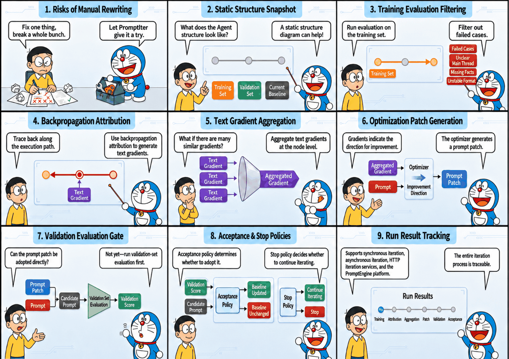

tRPC-Agent-Go PromptIter: A Complete Guide to Automated Prompt Iteration and Engineering Practice for AI Agents
When an Agent's prompt carries business rules, version risk does not come only from obvious failures. It also comes from behavior drift after a rewrite. A manual prompt change may fix one failed sample while reducing output quality in other scenarios. A higher training-set score alone cannot prove that a candidate version is acceptable. Validation-set evaluation results and an acceptance policy jointly determine whether a candidate version should be accepted. PromptIter organizes training sets, validation sets, structure snapshots, and execution traces into a reproducible prompt iteration workflow, and records each candidate version, score, patch, and stop reason as a result snapshot.
tRPC-Agent-Go is an autonomous multi-Agent framework for Go. It provides tool calling, session and memory management, artifact management, multi-Agent collaboration, graph orchestration, knowledge bases, observability, and more. tRPC-Agent-Go grows with community support. Stars are welcome.
tRPC-Agent-Go provides PromptIter on top of the Evaluation capability to move Agent prompt optimization from manual rewriting to an evaluation-constrained automated iteration workflow. PromptIter centers on training sets, validation sets, and evaluation metrics. It backpropagates failure signals exposed by the training set along execution traces for attribution, converts them into candidate prompts through text-gradient aggregation and optimization patch generation, and then lets validation-set evaluation and the acceptance policy decide whether the candidate prompt enters later rounds. Each run records candidate prompts, validation results, acceptance decisions, and stop reasons, so different prompt versions can be compared, reviewed, and traced under fixed evaluation criteria. It supports synchronous runs, asynchronous runs, and HTTP iteration services.

Background
Prompt optimization in the experiment phase usually relies on manual judgment and rewriting. Developers adjust prompts according to scattered failed samples and then validate them with a small number of cases. This works for exploration, but it is hard to use for continuous delivery. A single prompt change may affect task understanding, tool selection, and the content, structure, and expression of the final answer at the same time. Improvement on one sample is only a local signal and cannot replace regression validation across multiple scenarios.
After an Agent enters a business workflow, common risks in prompt optimization can be divided into four categories.
The optimization objective may drift. When manually fixing a single failed sample, a developer may add constraints that are too narrow. If those constraints only cover the current sample, output quality on other samples may drop.
Training signals and acceptance signals may be mixed. If the same failed samples are used both to generate modification suggestions and to evaluate candidate prompts, overfitting risk is amplified. A more rigorous approach is to let the training set expose problems and generate optimization signals, and let the validation set provide the validation score needed for candidate-prompt acceptance.
Failure signals are hard to attribute to specific nodes. For a single Agent, the issue may come from that Agent's prompt. For graph orchestration and multi-Agent systems, the issue may come from planning, retrieval, draft generation, editing review, or any other step. Looking only at the final answer makes it hard to decide which node should receive the failure signal.
Prompt versions lack structured records. Manually replacing prompt text can complete one change, but it is hard to trace which failure signals produced the candidate prompt, which positions were modified, and why the candidate was accepted or rejected.
PromptIter handles these risks through separate workflow stages. Evaluation provides reproducible evaluation inputs and metric outputs. The structure snapshot describes the static composition of the target Agent, including nodes, edges, and iterable content associated with nodes. The execution trace records the actual dynamic step path for the current run. Backpropagation attribution, text-gradient aggregation, and optimization patch generation gradually convert failure signals into candidate patches. Validation-set evaluation and the acceptance policy together form the acceptance decision for the candidate prompt.
Industry Survey
Prompt optimization is not just direct rewriting of prompt text. A more stable approach is to define evaluation criteria first, extract modification directions from failed samples, generate candidate prompts, and then validate whether candidates meet acceptance conditions on independent samples. The industry has explored several methods in this direction.
ProTeGi focuses on automatic search for a single task prompt. It analogizes gradient descent in numerical optimization to natural-language scenarios. The process first runs the current prompt and collects error samples, then asks a model to summarize the prompt issues exposed by those errors and form natural-language gradients. It then generates multiple candidate prompts from those gradients, keeps higher-scoring candidates in each round, continues the search, and finally selects the version with better evaluation performance.
TextGrad focuses on optimizing text variables in complex AI systems. It represents the system as a computation graph. Variables in the graph can be prompts, code snippets, or other text objects. After forward execution, feedback is produced by the objective function, evaluator, or downstream loss signal. An LLM writes the feedback as natural-language gradients, which are then backpropagated along the computation graph to related variables.
DSPy focuses on processing pipelines composed of multiple language-model calls. Developers describe module inputs and outputs with signatures, organize module calls with programs, and let the compiler optimize learnable parts such as examples and prompts around given metrics.
These methods show that prompt optimization can form an automated workflow around evaluation feedback, candidate generation, and metric validation. From a business implementation perspective, however, ProTeGi mainly targets single-prompt search and is hard to apply directly to multi-node Agent scenarios. TextGrad provides a general abstraction for text-variable optimization, but engineering implementation such as evaluation asset management, candidate-version acceptance, and run-result tracing still needs to be built separately. DSPy requires language-model call flows to be reorganized around its modules and signatures, which brings a high migration cost for existing Agent projects.
tRPC-Agent-Go uses PromptIter to bring this type of optimization workflow into existing Agent projects. It organizes training-set evaluation feedback, backpropagation attribution, text-gradient aggregation, optimization patch generation, candidate-prompt construction, validation-set acceptance decisions, and result tracing into a closed loop.
Quick Start
This section uses examples/evaluation/promptiter/syncrun to show the minimal integration path for synchronous prompt iteration. See the complete example at examples/evaluation/promptiter/syncrun.
The example code covers the following integration modes.
# Set the model service key.exportOPENAI_API_KEY="sk-xxx"# This is optional. If it is not set, the example uses the OpenAI-compatible default endpoint.exportOPENAI_BASE_URL="https://api.openai.com/v1"
Target Agent
The target Agent in the syncrun example is named candidate. It is an LLMAgent created with llmagent.New. The example creates this Agent through newCandidateAgent and passes the initial prompt as instruction. Later runs limit the modification target to the instruction of candidate.
The default initial prompt is Write a Chinese sports game recap. This initial prompt demonstrates how PromptIter generates candidate patches from training-set failure signals and accepts or rejects candidate prompts round by round according to validation-set evaluation results and the acceptance policy.
The target Agent and Runner are created as follows.
import("trpc.group/trpc-go/trpc-agent-go/agent""trpc.group/trpc-go/trpc-agent-go/agent/llmagent""trpc.group/trpc-go/trpc-agent-go/model""trpc.group/trpc-go/trpc-agent-go/runner")// newCandidateAgent creates the target Agent.funcnewCandidateAgent(mmodel.Model)(agent.Agent,error){// generationConfig fixes the generation parameters of the target Agent.generationConfig:=model.GenerationConfig{// MaxTokens keeps enough output space for a sports recap.MaxTokens:intPtr(32768),// Temperature reduces random fluctuation on the same evaluation case.Temperature:floatPtr(0.0),// Stream disables streaming output so Evaluation can collect the full answer.Stream:false,}returnllmagent.New("candidate",llmagent.WithModel(m),// PromptIter iterates this instruction in the current run.llmagent.WithInstruction("Write a Chinese sports game recap"),llmagent.WithGenerationConfig(generationConfig),),nil}candidateAgent,err:=newCandidateAgent(candidateModel)iferr!=nil{returnnil,fmt.Errorf("create candidate agent: %w",err)}// Runner is the entry point for Evaluation to execute the target Agent.candidateRunner:=runner.NewRunner("promptiter-nba-commentary-candidate",candidateAgent)
Construct AgentEvaluator
The evaluation stage needs to run the target Agent and calculate scores with the training set, validation set, and metric file. The example uses candidateRunner as the execution entry point for the target Agent and creates an AgentEvaluator through evaluation.New. When LLM Judge metrics are used, a Judge Runner must also be provided. The example then creates local EvalSetManager, MetricManager, and EvalResultManager instances to read evaluation sets, read metrics, and save evaluation results.
import("trpc.group/trpc-go/trpc-agent-go/evaluation""trpc.group/trpc-go/trpc-agent-go/evaluation/evalresult"evalresultlocal"trpc.group/trpc-go/trpc-agent-go/evaluation/evalresult/local""trpc.group/trpc-go/trpc-agent-go/evaluation/evalset"evalsetlocal"trpc.group/trpc-go/trpc-agent-go/evaluation/evalset/local""trpc.group/trpc-go/trpc-agent-go/evaluation/metric"metriclocal"trpc.group/trpc-go/trpc-agent-go/evaluation/metric/local""trpc.group/trpc-go/trpc-agent-go/runner")// A judge Runner is required when LLM Judge metrics are used.judgeRunner:=runner.NewRunner(judgeAppName,judgeAgent)// Evaluation sets, metrics, and evaluation results are managed by their managers.evalSetManager:=evalsetlocal.New(evalset.WithBaseDir("./data"))metricManager:=metriclocal.New(metric.WithBaseDir("./data"))evalResultManager:=evalresultlocal.New(evalresult.WithBaseDir("./output"))// AgentEvaluator runs training-set and validation-set evaluation.agentEvaluator,err:=evaluation.New(appName,candidateRunner,evaluation.WithEvalSetManager(evalSetManager),evaluation.WithMetricManager(metricManager),evaluation.WithEvalResultManager(evalResultManager),evaluation.WithJudgeRunner(judgeRunner),)iferr!=nil{returnerr}
Evaluation Files
The local EvalSetManager and MetricManager read evaluation sets and metric files from the example data directory. PromptIter follows the local file organization used by Evaluation. One PromptIter run specifies the training set and validation set through evaluation set IDs. The complete example reuses the same metric file, which is an Evaluation file-organization detail and is not expanded here.
# data is the example evaluation file directory.
data/
promptiter-nba-commentary-app/
nba-commentary-train.evalset.json
nba-commentary-validation.evalset.json
sports-commentary.metrics.json
These three types of files have different responsibilities.
nba-commentary-train.evalset.json is the training set, used to produce failure signals and optimization signals.
nba-commentary-validation.evalset.json is the validation set, used to provide evaluation results required for acceptance decisions.
sports-commentary.metrics.json is the metric file, used to define scoring rules shared by the training set and validation set.
The training set and validation set in this example use the same evaluation-case structure. userContent.content is the input to the target Agent and contains structured game JSON. finalResponse.content is the reference output used during evaluation and contains a prewritten Chinese sports recap.
{"evalId":"train_01_nba_nuggets_blowout","conversation":[{"userContent":{"role":"user","content":"{\"sport\":\"basketball\",\"league\":\"NBA\",\"teams\":{\"home\":{\"name\":\"Denver Nuggets\",\"score\":128},\"away\":{\"name\":\"Portland Trail Blazers\",\"score\":104}},\"recapAngle\":\"Denver's perimeter shooting and bench depth opened the game early, so the starters did not need to stay late in the fourth quarter\"}"},"finalResponse":{"role":"assistant","content":"Nuggets beat Trail Blazers 128-104 as 18 threes and 52 bench points let starters finish early\n\nOn January 12, 2026, the Denver Nuggets defeated the Portland Trail Blazers 128-104 at Ball Arena..."}}]}
During evaluation, Evaluation sends userContent.content to the target Agent and calculates metrics by comparing the actual output of the target Agent with finalResponse.content. Fixed reference outputs keep each run aligned with the same evaluation baseline and avoid extra fluctuation from online reference-answer generation.
The metric file contains two metrics. The key fields are shown below.
[{"metricName":"final_response_avg_score","threshold":1.0,"criterion":{"finalResponse":{"text":{"length":{"min":350,"max":850},"matchStrategy":"skip"}}}},{"metricName":"llm_rubric_critic","threshold":0.98,"criterion":{"llmJudge":{"rubrics":[{"id":"source_grounding","description":"The recap must be fully grounded in the user input.","type":"FINAL_RESPONSE_QUALITY","content":{"text":"The actual recap may only use facts supported by the user input and reference recap."}}]}}}]
final_response_avg_score is the final-response evaluator provided by Evaluation. The example uses it to constrain recap length. llm_rubric_critic is an LLM Judge metric. The example uses it together with the reference recap and rubrics to check factual grounding, the main storyline, decisive process, numbers, title, data interpretation, and the quality of Chinese sports copy.
Construct Engine
When constructing the PromptIter Engine, provide the target Agent and AgentEvaluator first. The target Agent is used to export the structure snapshot, and AgentEvaluator is used to run training-set and validation-set evaluation. Candidate patches also depend on Backwarder, Aggregator, and Optimizer. Backwarder performs backpropagation attribution and converts training-set failure signals into text gradients, that is, modification directions pointing to related steps and prompts. Aggregator aggregates text gradients by merging multiple text gradients on the same prompt to be modified. Optimizer generates optimization patches by producing a candidate patch for that prompt from the aggregated result.
import("trpc.group/trpc-go/trpc-agent-go/evaluation/workflow/promptiter/aggregator""trpc.group/trpc-go/trpc-agent-go/evaluation/workflow/promptiter/backwarder""trpc.group/trpc-go/trpc-agent-go/evaluation/workflow/promptiter/engine""trpc.group/trpc-go/trpc-agent-go/evaluation/workflow/promptiter/optimizer""trpc.group/trpc-go/trpc-agent-go/runner")// backwarderRunner calls the model to perform backpropagation attribution.backwarderRunner:=runner.NewRunner(backwarderAppName,backwarderAgent)// aggregatorRunner calls the model to perform text-gradient aggregation.aggregatorRunner:=runner.NewRunner(aggregatorAppName,aggregatorAgent)// optimizerRunner calls the model to perform optimization patch generation.optimizerRunner:=runner.NewRunner(optimizerAppName,optimizerAgent)// Backwarder performs backpropagation attribution.backwarderInstance,err:=backwarder.New(ctx,backwarderRunner)iferr!=nil{returnerr}// Aggregator performs text-gradient aggregation.aggregatorInstance,err:=aggregator.New(ctx,aggregatorRunner)iferr!=nil{returnerr}// Optimizer performs optimization patch generation.optimizerInstance,err:=optimizer.New(ctx,optimizerRunner)iferr!=nil{returnerr}// Engine binds the target Agent, evaluator, and three PromptIter worker components.engineInstance,err:=engine.New(ctx,candidateAgent,agentEvaluator,backwarderInstance,aggregatorInstance,optimizerInstance,)iferr!=nil{returnerr}
Construct RunRequest
RunRequest specifies the training set, validation set, iteration target, maximum rounds, acceptance policy, and stop policy for one PromptIter run.
import(astructure"trpc.group/trpc-go/trpc-agent-go/agent/structure""trpc.group/trpc-go/trpc-agent-go/evaluation/workflow/promptiter/engine")// targetScore is the target validation score for this run.targetScore:=1.0// targetInstructionID points to the instruction of the candidate Agent. Its value is candidate#instruction.targetInstructionID:=astructure.SurfaceID("candidate",astructure.SurfaceTypeInstruction)result,err:=engineInstance.Run(ctx,&engine.RunRequest{// Train specifies the training set that produces optimization signals.Train:[]engine.EvalSetInput{{// EvalSetID points to the training set used to produce optimization signals.EvalSetID:trainEvalSetID,},},// Validation specifies the validation set used for acceptance decisions.Validation:[]engine.EvalSetInput{{// EvalSetID points to the validation set used for acceptance decisions.EvalSetID:validationEvalSetID,},},// Training-set and validation-set evaluation run concurrently by evaluation case.EvaluationOptions:engine.EvaluationOptions{// EvalCaseParallelism limits evaluation-case concurrency.EvalCaseParallelism:16,// EvalCaseParallelInferenceEnabled enables concurrent inference for the target Agent.EvalCaseParallelInferenceEnabled:true,// EvalCaseParallelEvaluationEnabled enables concurrent metric calculation.EvalCaseParallelEvaluationEnabled:true,},// Backpropagation attribution processes evaluation cases sequentially by default.BackwardOptions:engine.BackwardOptions{// CaseParallelismEnabled controls whether training-set evaluation cases are processed concurrently.CaseParallelismEnabled:false,// CaseParallelism is the evaluation-case concurrency limit after concurrency is enabled.CaseParallelism:16,},// Text-gradient aggregation runs concurrently by iteration target.AggregationOptions:engine.AggregationOptions{// SurfaceParallelismEnabled controls whether multiple iteration targets are processed concurrently.SurfaceParallelismEnabled:true,// SurfaceParallelism is the iteration-target concurrency limit.SurfaceParallelism:16,},// Optimization patch generation runs concurrently by iteration target.OptimizerOptions:engine.OptimizerOptions{// SurfaceParallelismEnabled controls whether patches are generated concurrently for multiple iteration targets.SurfaceParallelismEnabled:true,// SurfaceParallelism is the iteration-target concurrency limit.SurfaceParallelism:16,},// A candidate prompt must improve over the current baseline prompt by at least 0.01 points.AcceptancePolicy:engine.AcceptancePolicy{// MinScoreGain is the minimum validation-score gain required to accept a candidate prompt.MinScoreGain:0.01,},// The run stops when it reaches max rounds, consecutive non-accepted rounds, or the target score.MaxRounds:4,StopPolicy:engine.StopPolicy{// MaxRoundsWithoutAcceptance limits consecutive rounds without accepting a candidate prompt.MaxRoundsWithoutAcceptance:3,// TargetScore is the target validation score after which the run can stop.TargetScore:&targetScore,},// The iteration target of this run is the instruction of the candidate Agent.TargetSurfaceIDs:[]string{targetInstructionID},})iferr!=nil{returnerr}
In the example, TargetSurfaceIDs is set to candidate#instruction, so the iteration target of this run is the instruction of the target Agent. When integrating multi-Agent or graph orchestration scenarios, first use engine.Describe(ctx) or the HTTP /structure endpoint to get the structure snapshot, then select targets from the returned result. This avoids hard-coding target IDs in business code.
# Set the model service key.exportOPENAI_API_KEY="sk-xxx"# This is optional. If it is not set, the example uses the OpenAI-compatible default endpoint.exportOPENAI_BASE_URL="https://api.openai.com/v1"# Run the synchronous prompt iteration example.go-Cexamples/evaluationrun./promptiter/syncrun\-data-dir./promptiter/syncrun/data\-output-dir./promptiter/syncrun/output\-model"deepseek-v3.2"\-judge-model"gpt-5.2"\-worker-model"gpt-5.2"
The example enables evaluation-case-level concurrent inference and concurrent evaluation for the training set and validation set by default. It also enables iteration-target-level concurrency for text-gradient aggregation and optimization patch generation by default. Backpropagation attribution processes evaluation cases sequentially by default. If the model service limits concurrency, reduce -eval-case-parallelism, -aggregation-parallelism, or -optimizer-parallelism, or disable the corresponding concurrency switch.
View Results
After synchronous prompt iteration finishes, engine.Run(...) returns a RunResult. The example prints the structure ID, iteration target, initial prompt, final accepted baseline prompt, validation score, and each round's decision in the terminal.
This output reflects PromptIter's acceptance semantics. The candidates in rounds 1 and 2 pass the acceptance decision, so the current baseline is gradually updated to the round-2 candidate prompt. Although rounds 3 and 4 have high training-set scores, their validation scores do not exceed the validation score of the current baseline prompt, so they are not accepted. The final baseline remains the round-2 candidate prompt.
Core Concepts
As shown below, PromptIter starts iterating from the initial prompt. At run start, the initial prompt forms the initial baseline and is used as the current baseline of the first round. Each round generates candidate prompts from training-set failure signals, then uses validation-set evaluation and the acceptance policy to decide whether a candidate prompt is better than the current baseline. Only after a candidate prompt passes the acceptance decision is the current baseline updated for the next round. If the candidate is not accepted, the current baseline remains unchanged. Iteration input is described by RunRequest, and iteration output is RunResult.
Run Request describes the input of one iteration run, including training sets, validation sets, iteration targets, maximum rounds, acceptance policy, and stop policy.
Baseline Validation runs validation-set evaluation on the initial prompt and records the validation score of the initial baseline.
Train Evaluation runs training-set evaluation on the current baseline prompt and produces failure signals needed by later optimization stages. The training set is not responsible for candidate-prompt acceptance.
Backward performs backpropagation attribution with training-set failure reasons and dynamic execution traces, associates failure signals with target prompts, and generates text gradients.
Aggregate aggregates text gradients by target prompt and forms an aggregated gradient for that target.
Optimize generates candidate patches from aggregated gradients.
Candidate Profile represents the prompt snapshot produced by applying candidate patches to the current baseline prompt. It is the input of validation-set evaluation.
Validation Evaluation runs validation-set evaluation on the candidate prompt snapshot and outputs validation scores and metric details.
Accept Policy compares the candidate prompt snapshot with the validation result of the current baseline and decides whether to update the current baseline.
Stop Policy decides whether to end the current run according to run state. If no stop condition is met, the workflow returns to training-set evaluation and enters the next round.
Run Result summarizes the structure snapshot, initial baseline validation, training evaluation, failure signals, backpropagation attribution, text-gradient aggregation, candidate patches, candidate prompt snapshot, validation evaluation, and decision results of the current run.
One PromptIter run usually contains these steps.
PromptIter confirms the training set, validation set, and prompts allowed to be iterated according to RunRequest.
Train Evaluation runs training-set evaluation on the current baseline prompt and extracts failure signals.
Backward generates text gradients for target prompts from failure reasons and the dynamic execution trace.
Aggregate merges text gradients on the same target prompt.
Optimize generates candidate patches from aggregated gradients and forms a candidate Profile.
Validation Evaluation runs validation-set evaluation on the candidate Profile.
Accept Policy decides whether to accept the candidate Profile as the new current baseline.
Stop Policy decides whether the run should end. If not, the workflow enters the next round.
PromptIter writes the process and results into RunResult.
Usage
Evaluation System
PromptIter reuses Evaluation assets and execution capabilities.
EvalSet describes evaluation cases in the training set and validation set.
EvalMetric describes each metric and the score threshold that determines whether it passes.
Evaluator executes scoring logic for one metric.
AgentEvaluator organizes one evaluation, reads the evaluation set and metrics, invokes evaluators through the registry, and returns aggregated results.
EvalResultManager saves each evaluation result. In local mode, it writes local files.
In PromptIter, training-set evaluation results are used to extract optimization signals. The extracted signals then enter backpropagation attribution, text-gradient aggregation, and optimization patch generation. Validation-set evaluation results are used to decide whether a candidate prompt satisfies the acceptance policy and to provide the current baseline validation score for the stop policy.
Train/Validation Separation
The training set is used to produce optimization signals, and the validation set is used to provide evaluation results required for candidate-prompt acceptance decisions. Both are specified through EvalSetInput. Each input can point to the whole evaluation set or use EvalCaseIDs to narrow the scope to specific evaluation cases.
import("trpc.group/trpc-go/trpc-agent-go/evaluation/workflow/promptiter")// EvalSetInput specifies one training-set or validation-set input.typeEvalSetInputstruct{// EvalSetID is the evaluation set ID to run.EvalSetIDstring// EvalCaseIDs narrows the run scope to specific evaluation cases. An empty list means all evaluation cases run.EvalCaseIDs[]string// LossHints supplements known business-side problem reasons for failed training-set metrics.LossHints[]LossHint}// LossHint supplements the problem reason for one failed metric on one evaluation case.typeLossHintstruct{// EvalCaseID specifies the evaluation case corresponding to the problem reason.EvalCaseIDstring// MetricName specifies the metric corresponding to the problem reason.MetricNamestring// Severity indicates the priority of the problem reason.Severitypromptiter.LossSeverity// Reason is the problem-reason text used for backpropagation attribution.Reasonstring}
If EvalCaseIDs is not specified, PromptIter runs all evaluation cases under the corresponding evaluation set. If a non-empty list is specified, only the listed evaluation cases run.
When the business side already knows the specific problem in a training-set evaluation case, LossHint can supplement the problem reason. PromptIter merges Reason into the optimization signal of the corresponding failed metric, so backpropagation attribution can consider both the reason from the evaluator and the reason supplemented by the business side. When LossHint is used, EvalCaseID and MetricName must match a failed metric in the current training evaluation result, and Severity must be P0, P1, P2, or P3. LossHint does not change the evaluation score and does not participate in validation-set acceptance decisions.
Training sets and validation sets must be used separately. A higher training-set score only means the candidate patch is closer to metric requirements on samples used for optimization. It cannot prove that samples not used for optimization also satisfy the metrics. The validation set exposes overfitting risk and participates in acceptance decisions.
Static Structure Snapshot
The static structure snapshot is the exported structure of the target Agent. It contains nodes, edges, and iterable slots. Content that can be used as an iteration target in the structure snapshot is called a surface in code. Each surface has a stable SurfaceID. This document discusses only instruction prompt iteration. PromptIter uses the structure snapshot to confirm whether the specified instruction surface exists for the current run.
This document discusses only instruction-type surfaces, that is, instruction prompts on nodes. Prompt iteration needs an explicit target scope, so integration code must write the selected SurfaceID into TargetSurfaceIDs in the iteration request.
Describe can be used to inspect the structure snapshot. After determining the instruction surface to iterate, write the corresponding ID into TargetSurfaceIDs in the iteration request.
// Describe returns the static structure snapshot of the target Agent.snapshot,err:=engineInstance.Describe(ctx)iferr!=nil{returnerr}// Surfaces lists the surfaces that can be used as iteration targets in the current structure.for_,surface:=rangesnapshot.Surfaces{fmt.Println(surface.SurfaceID,surface.Type)}
LLMAgent Example
In an LLMAgent scenario, the target Agent is created with llmagent.New.
import("trpc.group/trpc-go/trpc-agent-go/agent/llmagent")// llmagent.New creates the target Agent.llmagent.New("candidate",llmagent.WithModel(candidateModel),// WithInstruction writes the initial prompt corresponding to candidate#instruction.llmagent.WithInstruction("Write a Chinese sports game recap"),)
This Agent has only one node in its static structure. The instruction surface is the iterable prompt on that node, and its ID is candidate#instruction. The corresponding static structure is shown below.
Graph Agent Example
In a Graph Agent scenario, the static structure contains the root Agent, graph nodes, and edges. Code mounts child Agents through AddAgentNode, and those nodes export their own instruction surfaces. The flow fans out from prepare to title, introduction, and highlight, then joins at merge. Finally, review chooses either publish or return to polish according to the result, covering fan-out, fan-in, and conditional edges.
import("trpc.group/trpc-go/trpc-agent-go/agent""trpc.group/trpc-go/trpc-agent-go/agent/graphagent""trpc.group/trpc-go/trpc-agent-go/agent/llmagent""trpc.group/trpc-go/trpc-agent-go/graph")// newGraphAgent creates a Graph Agent with fan-out, fan-in, and conditional edges.funcnewGraphAgent()(agent.Agent,error){// subAgents lists the child Agents used by the Graph Agent.subAgents:=[]agent.Agent{// title corresponds to candidate/title#instruction.llmagent.New("title",llmagent.WithModel(modelInstance),llmagent.WithInstruction("Generate a Chinese recap title"),),// introduction corresponds to candidate/introduction#instruction.llmagent.New("introduction",llmagent.WithModel(modelInstance),llmagent.WithInstruction("Write the game background and opening lead"),),// highlight corresponds to candidate/highlight#instruction.llmagent.New("highlight",llmagent.WithModel(modelInstance),llmagent.WithInstruction("Extract key possessions and turning points"),),// polish corresponds to candidate/polish#instruction.llmagent.New("polish",llmagent.WithModel(modelInstance),llmagent.WithInstruction("Polish the recap structure and wording"),),// review corresponds to candidate/review#instruction.llmagent.New("review",llmagent.WithModel(modelInstance),llmagent.WithInstruction("Review factual consistency and publishing standards"),),}// StateGraph connects normal function nodes and AgentNode nodes.sg:=graph.NewStateGraph(graph.NewStateSchema())sg.AddNode("prepare",prepare)sg.AddAgentNode("title")sg.AddAgentNode("introduction")sg.AddAgentNode("highlight")sg.AddNode("merge",mergeDraft)sg.AddAgentNode("polish")sg.AddAgentNode("review")sg.AddNode("publish",publish)sg.SetEntryPoint("prepare")// fan-out means one node dispatches to three AgentNode nodes.sg.AddEdge("prepare","title")sg.AddEdge("prepare","introduction")sg.AddEdge("prepare","highlight")// fan-in waits for title, introduction, and highlight to all finish before entering merge.sg.AddJoinEdge([]string{"title","introduction","highlight"},"merge")sg.AddEdge("merge","polish")sg.AddEdge("polish","review")// Conditional edges use routeAfterReview to choose publish or return to polish according to state.sg.AddConditionalEdges("review",routeAfterReview,map[string]string{"pass":"publish","revise":"polish",})sg.SetFinishPoint("publish")// Compile generates the graph structure required by graphagent.New.g,err:=sg.Compile()iferr!=nil{returnnil,err}// graphagent.New binds the graph structure and child Agents.returngraphagent.New("candidate",g,graphagent.WithSubAgents(subAgents))}
In this example, prepare, merge, and publish are normal function nodes and do not expose instruction surfaces. Nodes mounted through AddAgentNode export the instruction surfaces of their child Agents.
The NodeID exported by a Graph Agent has the root Agent name as a prefix. For example, merge in the code corresponds to candidate/merge in the structure snapshot. The SurfaceID of an instruction surface on an AgentNode has the form <root Agent>/<node name>#instruction.
This example contains five instruction surfaces. Their SurfaceID values are:
candidate/title#instruction
candidate/introduction#instruction
candidate/highlight#instruction
candidate/polish#instruction
candidate/review#instruction
The corresponding static structure is shown below.
Dynamic Execution Trace
The dynamic execution trace records the steps actually passed during one evaluation run and their dependencies. The static structure snapshot describes the nodes, edges, and surfaces an Agent may contain. The dynamic execution trace records the steps actually passed in the current run.
Each execution step has a StepID and is associated with a node in the static structure through NodeID. PredecessorStepIDs records direct predecessors, and AppliedSurfaceIDs records the surfaces actually applied by the current step. The trace also contains input and output snapshots and error information. Static nodes and execution steps are not one-to-one. A static node may not execute in a run, or it may execute multiple times because of loops or conditional fallback.
LLMAgent Example
In an LLMAgent scenario, there is only one static node. One evaluation run corresponds to one execution step. The StepID in the actual trace is assigned at runtime, NodeID is candidate, and PredecessorStepIDs is empty. The step's AppliedSurfaceIDs records the surfaces actually applied. If the sample produces failed metrics, backpropagation attribution starts from this step.
The corresponding dynamic execution trace is shown below.
Graph Agent Example
In a Graph Agent scenario, branches and conditional edges in the static structure appear in the step path of the current run. The dynamic trace uses StepID and NodeID together to describe one execution step. StepID is a runtime-assigned step identifier, and NodeID points to the node in the static structure. The same NodeID can correspond to multiple different StepID values.
In the diagram, s1, s2, and similar labels are StepID values, while candidate/prepare, candidate/title, and similar labels are NodeID values. In this run, candidate/review first hits revise, so the flow returns to candidate/polish. After the second review hits pass, the flow enters candidate/publish.
candidate/title, candidate/introduction, candidate/highlight, candidate/polish, and candidate/review are AgentNode nodes with instruction surfaces. The AppliedSurfaceIDs of the corresponding steps contain their instruction surfaces, such as candidate/title#instruction. candidate/prepare, candidate/merge, and candidate/publish are normal function nodes and do not expose instruction surfaces.
If conditional routing hits revise, the trace returns to candidate/polish. When the same static node executes again, a new execution step and a new StepID are created. If revise is hit again, the trace continues to append new steps whose NodeID values still point to candidate/polish and candidate/review.
Backpropagation attribution needs to consider both the static structure and dynamic execution trace. After training-set evaluation completes, failure signals are first associated with terminal steps. Terminal steps are steps not referenced by any other step and usually correspond to the last output step or the last group of output steps in the current run. Then backpropagation attribution processes steps backward along PredecessorStepIDs. It uses the current step's input, output, error, actually applied surfaces, and problem signals returned from successor steps to decide whether the problem should be attributed to the current step's target instruction surface or passed to predecessor steps.
Loss Extraction
After training-set evaluation completes, PromptIter extracts losses from failed metrics. Only metrics with status failed enter loss extraction. Passed metrics do not produce optimization signals.
Evaluation metric results contain the Details.Reason field, which records the reason for the metric decision. For failed metrics, this field explains why the evaluation case did not pass. When a custom evaluator integrates with PromptIter, it should write a concrete reason usable for loss construction, such as missing facts, excessive length, overly generic output, or deviation from the reference answer.
When the business side needs to supplement problem reasons, set LossHints in the training-set EvalSetInput.
import("trpc.group/trpc-go/trpc-agent-go/evaluation/workflow/promptiter""trpc.group/trpc-go/trpc-agent-go/evaluation/workflow/promptiter/engine")// train specifies the training set that produces optimization signals and supplements known business-side problem reasons.train:=[]engine.EvalSetInput{{// EvalSetID points to the training set used to produce optimization signals.EvalSetID:trainEvalSetID,// LossHints only supplements problem reasons for failed metrics and does not change evaluation scores.LossHints:[]engine.LossHint{{// EvalCaseID specifies the evaluation case corresponding to the problem reason.EvalCaseID:"case_1",// MetricName specifies the metric corresponding to the problem reason.MetricName:"llm_rubric_critic",// Severity indicates the priority of this problem reason.Severity:promptiter.LossSeverityP1,// Reason writes a concrete problem reason for backpropagation attribution.Reason:"The answer omitted the decisive player and score state of the current possession.",},},},}
LossHints only supplements optimization signals in the training phase. It does not change evaluation scores and does not affect validation-set acceptance decisions. PromptIter only uses a LossHint when the corresponding Metric of the corresponding EvalCase is in failed status in the current training evaluation. If the metric passes in the current round, LossHint will not change the evaluation case to failed.
Backwarder
The responsibility of Backwarder is to generate two kinds of output from failed samples, current step context, and incoming gradient packets. One is text gradients attributed to the current step's surfaces. The other is gradient packets that need to continue being passed to predecessor steps.
import(astructure"trpc.group/trpc-go/trpc-agent-go/agent/structure"atrace"trpc.group/trpc-go/trpc-agent-go/agent/trace""trpc.group/trpc-go/trpc-agent-go/evaluation/workflow/promptiter")// Backwarder performs backpropagation attribution on a single step.typeBackwarderinterface{// Backward generates text gradients and upstream gradient packets from step context.Backward(ctxcontext.Context,request*Request)(*Result,error)}// Request describes the backpropagation-attribution input for one execution step.typeRequeststruct{// EvalSetID identifies the current evaluation set.EvalSetIDstring// EvalCaseID identifies the current evaluation case.EvalCaseIDstring// Node is the static node corresponding to the current step.Node*astructure.Node// StepID identifies the current execution step.StepIDstring// Input is the input snapshot of the current step.Input*atrace.Snapshot// Output is the output snapshot of the current step.Output*atrace.Snapshot// Error records the runtime error of the current step.Errorstring// Surfaces are the surfaces that affect the current step.Surfaces[]astructure.Surface// AllowedGradientSurfaceIDs limits the surfaces allowed for attribution.AllowedGradientSurfaceIDs[]string// Predecessors are the direct predecessor steps of the current step.Predecessors[]Predecessor// Incoming is the gradient packets passed from successor steps.Incoming[]GradientPacket}// Predecessor describes one direct predecessor step of the current step.typePredecessorstruct{// StepID identifies the predecessor step.StepIDstring// NodeID identifies the static node corresponding to the predecessor step.NodeIDstring// Output is the output snapshot of the predecessor step.Output*atrace.Snapshot// Error records the runtime error of the predecessor step.Errorstring}// GradientPacket describes one problem signal passed back from a successor step.typeGradientPacketstruct{// FromStepID identifies the successor step that produced the problem signal.FromStepIDstring// Severity indicates the priority of the problem signal.Severitypromptiter.LossSeverity// Gradient stores the text content of the problem signal.Gradientstring}// Result describes the backpropagation-attribution result of the current step.typeResultstruct{// Gradients are text gradients attributed to the current step's surfaces.Gradients[]promptiter.SurfaceGradient// Upstream is the problem signals that need to continue to predecessor steps.Upstream[]Propagation}// Propagation describes the problem-signal collection to pass to one predecessor step.typePropagationstruct{// PredecessorStepID identifies the predecessor step receiving the problem signals.PredecessorStepIDstring// Gradients are the problem signals passed to the predecessor step.Gradients[]GradientPacket}
Backwarder.Request describes the current evaluation set, evaluation case, static node, and step ID. The request also carries attribution context, including input and output snapshots and errors, surfaces applied by the current step, SurfaceID values allowed for attribution, predecessor steps, and incoming gradient packets. The default implementation organizes this attribution context into one user message and constrains the model to return Gradients and Upstream through structured output.
Gradients represents text gradients attributed to surfaces of the current step. Upstream represents problem signals that need to continue to predecessor steps and will be processed by those predecessor steps.
The diagram below uses three execution-step nodes, s1, s2, and s3, as an example. During backpropagation, s3 passes Incoming gradient packets to s2. After reading the context of s2, Backwarder outputs Gradients attributed to the surfaces of s2 and passes Upstream gradient packets on to s1.
The default Backwarder implementation is created through backwarder.New. It organizes the current step context, failure reasons, and problem signals passed back from successor steps into model input, and asks the model to return text gradients attributed to current surfaces and Upstream values for predecessor steps.
import("trpc.group/trpc-go/trpc-agent-go/runner")// New creates the default Backwarder implementation.funcNew(ctxcontext.Context,runnerrunner.Runner,opt...Option)(Backwarder,error)
import("trpc.group/trpc-go/trpc-agent-go/evaluation/workflow/promptiter/backwarder""trpc.group/trpc-go/trpc-agent-go/runner")// backwarderRunner calls the model to perform backpropagation attribution.backwarderRunner:=runner.NewRunner("promptiter-backwarder",backwarderAgent)// backwarder.New creates the default Backwarder implementation.backwarderInstance,err:=backwarder.New(ctx,backwarderRunner)
Construction-time options can adjust message construction, Runner parameters, and session identifiers. They are defined as follows.
import("trpc.group/trpc-go/trpc-agent-go/agent""trpc.group/trpc-go/trpc-agent-go/model")// Option configures the default Backwarder implementation.typeOptionfunc(*options)// MessageBuilder encodes a Backwarder request into the message passed to Runner.typeMessageBuilderfunc(ctxcontext.Context,request*Request)(*model.Message,error)// UserIDSupplier provides a user ID for one internal Backwarder Runner call.typeUserIDSupplierfunc(ctxcontext.Context)string// SessionIDSupplier provides a session ID for one internal Backwarder Runner call.typeSessionIDSupplierfunc(ctxcontext.Context)string// WithRunOptions appends RunOption values used by internal Backwarder Runner calls.funcWithRunOptions(runOptions...agent.RunOption)Option// WithMessageBuilder replaces the default message-building logic.funcWithMessageBuilder(builderMessageBuilder)Option// WithUserIDSupplier replaces the default user ID generation logic.funcWithUserIDSupplier(supplierUserIDSupplier)Option// WithSessionIDSupplier replaces the default session ID generation logic.funcWithSessionIDSupplier(supplierSessionIDSupplier)Option
WithRunOptions is passed through to internal Runner calls of the component. WithMessageBuilder can replace the default message-building logic. WithUserIDSupplier and WithSessionIDSupplier can specify session identifiers for internal calls.
Aggregator
Different samples and different steps in the training set may attribute problems to the same surface. The responsibility of Aggregator is to aggregate local text gradients by SurfaceID and output an aggregated result for a single surface.
import(astructure"trpc.group/trpc-go/trpc-agent-go/agent/structure""trpc.group/trpc-go/trpc-agent-go/evaluation/workflow/promptiter")// Aggregator aggregates multiple text gradients on the same surface.typeAggregatorinterface{// Aggregate merges local text gradients into an aggregated result for a single surface.Aggregate(ctxcontext.Context,request*Request)(*Result,error)}// Request describes the text-gradient aggregation input for a single surface.typeRequeststruct{// SurfaceID identifies the surface being aggregated.SurfaceIDstring// NodeID identifies the static node that owns this surface.NodeIDstring// Type identifies the type of this surface.Typeastructure.SurfaceType// Gradients contains all local text gradients attributed to this surface.Gradients[]promptiter.SurfaceGradient}// Result describes the text-gradient aggregation result for a single surface.typeResultstruct{// Gradient is the aggregated surface-level text gradient.Gradient*promptiter.AggregatedSurfaceGradient}// SurfaceGradient stores a local text gradient attributed to one surface.typeSurfaceGradientstruct{// EvalSetID identifies the evaluation set that produced this text gradient.EvalSetIDstring// EvalCaseID identifies the evaluation case that produced this text gradient.EvalCaseIDstring// StepID identifies the execution step that produced this text gradient.StepIDstring// SurfaceID identifies the surface this text gradient is attributed to.SurfaceIDstring// Severity indicates the priority of the issue corresponding to this text gradient.SeverityLossSeverity// Gradient stores the text-gradient content.Gradientstring}// AggregatedSurfaceGradient stores the aggregated text gradient of a single surface.typeAggregatedSurfaceGradientstruct{// SurfaceID identifies the surface corresponding to the aggregation result.SurfaceIDstring// NodeID identifies the static node that owns this surface.NodeIDstring// Type identifies the type of this surface.Typeastructure.SurfaceType// Gradients stores the aggregated text gradients.Gradients[]SurfaceGradient}
Aggregator.Request contains the target SurfaceID, owner NodeID, surface type, and all text gradients under this surface. The default implementation asks the model to aggregate duplicate or similar text gradients. The model returns a merged text-gradient list, and the default implementation binds the target SurfaceID, NodeID, and surface type to form AggregatedSurfaceGradient.
The text-gradient aggregation stage does not directly modify prompts. Its output is still an aggregated text gradient for a single surface and is used by the next Optimizer stage to generate patches.
The default Aggregator implementation is created through aggregator.New. It organizes text gradients from different samples or steps on the same surface into model input and converts the model-returned aggregated text gradients into AggregatedSurfaceGradient.
import("trpc.group/trpc-go/trpc-agent-go/runner")// New creates the default Aggregator implementation.funcNew(ctxcontext.Context,runnerrunner.Runner,opt...Option)(Aggregator,error)
import("trpc.group/trpc-go/trpc-agent-go/evaluation/workflow/promptiter/aggregator""trpc.group/trpc-go/trpc-agent-go/runner")// aggregatorRunner calls the model to perform text-gradient aggregation.aggregatorRunner:=runner.NewRunner("promptiter-aggregator",aggregatorAgent)// aggregator.New creates the default Aggregator implementation.aggregatorInstance,err:=aggregator.New(ctx,aggregatorRunner)
Construction-time options can adjust message construction, Runner parameters, and session identifiers. They are defined as follows.
import("trpc.group/trpc-go/trpc-agent-go/agent""trpc.group/trpc-go/trpc-agent-go/model")// Option configures the default Aggregator implementation.typeOptionfunc(*options)// MessageBuilder encodes an Aggregator request into the message passed to Runner.typeMessageBuilderfunc(ctxcontext.Context,request*Request)(*model.Message,error)// UserIDSupplier provides a user ID for one internal Aggregator Runner call.typeUserIDSupplierfunc(ctxcontext.Context)string// SessionIDSupplier provides a session ID for one internal Aggregator Runner call.typeSessionIDSupplierfunc(ctxcontext.Context)string// WithRunOptions appends RunOption values used by internal Aggregator Runner calls.funcWithRunOptions(runOptions...agent.RunOption)Option// WithMessageBuilder replaces the default message-building logic.funcWithMessageBuilder(builderMessageBuilder)Option// WithUserIDSupplier replaces the default user ID generation logic.funcWithUserIDSupplier(supplierUserIDSupplier)Option// WithSessionIDSupplier replaces the default session ID generation logic.funcWithSessionIDSupplier(supplierSessionIDSupplier)Option
WithRunOptions is passed through to internal Runner calls of the component. WithMessageBuilder can replace the default message-building logic. WithUserIDSupplier and WithSessionIDSupplier can specify session identifiers for internal calls.
Optimizer
The responsibility of Optimizer is to generate a SurfacePatch from the current surface value and the aggregated text gradient.
import(astructure"trpc.group/trpc-go/trpc-agent-go/agent/structure""trpc.group/trpc-go/trpc-agent-go/evaluation/workflow/promptiter")// Optimizer generates candidate patches from aggregated text gradients.typeOptimizerinterface{// Optimize generates one candidate SurfacePatch for the target surface.Optimize(ctxcontext.Context,request*Request)(*Result,error)}// Request describes optimization input for a single surface.typeRequeststruct{// Surface stores the surface value in the current baseline Profile.Surface*astructure.Surface// Gradient stores the aggregated text gradient for this surface.Gradient*promptiter.AggregatedSurfaceGradient}// Result describes the optimization result for a single surface.typeResultstruct{// Patch is the candidate patch generated for this surface.Patch*promptiter.SurfacePatch}// PatchSet stores the candidate patch collection produced by one optimization round.typePatchSetstruct{// Patches contains all candidate surface patches in the current round.Patches[]SurfacePatch}// SurfacePatch describes a candidate modification for one surface.typeSurfacePatchstruct{// SurfaceID identifies the modified surface.SurfaceIDstring// Value stores the candidate surface value.Valueastructure.SurfaceValue// Reason explains why this patch was generated.Reasonstring}
Request.Surface provides the surface value in the current baseline Profile, and Request.Gradient provides the aggregated modification direction. One Optimize call returns one SurfacePatch. One round may contain multiple target surfaces, and Engine summarizes these patches into a PatchSet.
The default Optimizer implementation is created through optimizer.New. It organizes the current surface value and aggregated text gradient into model input and asks the model to return a candidate SurfacePatch.
import("trpc.group/trpc-go/trpc-agent-go/runner")// New creates the default Optimizer implementation.funcNew(ctxcontext.Context,runnerrunner.Runner,opt...Option)(Optimizer,error)
import("trpc.group/trpc-go/trpc-agent-go/evaluation/workflow/promptiter/optimizer""trpc.group/trpc-go/trpc-agent-go/runner")// optimizerRunner calls the model to perform optimization patch generation.optimizerRunner:=runner.NewRunner("promptiter-optimizer",optimizerAgent)// optimizer.New creates the default Optimizer implementation.optimizerInstance,err:=optimizer.New(ctx,optimizerRunner)
Construction-time options can adjust message construction, Runner parameters, and session identifiers. They are defined as follows.
import("trpc.group/trpc-go/trpc-agent-go/agent""trpc.group/trpc-go/trpc-agent-go/model")// Option configures the default Optimizer implementation.typeOptionfunc(*options)// MessageBuilder encodes an Optimizer request into the message passed to Runner.typeMessageBuilderfunc(ctxcontext.Context,request*Request)(*model.Message,error)// UserIDSupplier provides a user ID for one internal Optimizer Runner call.typeUserIDSupplierfunc(ctxcontext.Context)string// SessionIDSupplier provides a session ID for one internal Optimizer Runner call.typeSessionIDSupplierfunc(ctxcontext.Context)string// WithRunOptions appends RunOption values used by internal Optimizer Runner calls.funcWithRunOptions(runOptions...agent.RunOption)Option// WithMessageBuilder replaces the default message-building logic.funcWithMessageBuilder(builderMessageBuilder)Option// WithUserIDSupplier replaces the default user ID generation logic.funcWithUserIDSupplier(supplierUserIDSupplier)Option// WithSessionIDSupplier replaces the default session ID generation logic.funcWithSessionIDSupplier(supplierSessionIDSupplier)Option
WithRunOptions is passed through to internal Runner calls of the component. WithMessageBuilder can replace the default patch-generation message, which is useful when integrating business-specific patch constraints or output style requirements. WithUserIDSupplier and WithSessionIDSupplier can specify session identifiers for internal calls.
Override Profile
Profile represents a group of surface override values bound to a structure snapshot.
import(astructure"trpc.group/trpc-go/trpc-agent-go/agent/structure")// Profile stores surface override values bound to a structure snapshot.typeProfilestruct{// StructureID identifies the structure snapshot this Profile applies to.StructureIDstring// Overrides stores override entries relative to original values in the structure snapshot.Overrides[]SurfaceOverride}// SurfaceOverride describes the override value of a single surface.typeSurfaceOverridestruct{// SurfaceID identifies the overridden surface.SurfaceIDstring// Value stores the new value of this surface.Valueastructure.SurfaceValue}
Engine applies the PatchSet to the current baseline Profile to obtain a candidate Profile. Only after the acceptance decision passes does the candidate Profile become the new current baseline.
Run Decision Policies
AcceptancePolicy controls whether the current candidate Profile is accepted.
// AcceptancePolicy controls whether a candidate Profile is accepted.typeAcceptancePolicystruct{// MinScoreGain is the minimum validation-score gain of the candidate Profile over the current baseline Profile.MinScoreGainfloat64}
The implementation calculates candidateScore - baselineScore, where baselineScore is the validation score of the current baseline Profile and candidateScore is the validation score of the candidate Profile in the current round. The candidate Profile is accepted only when the score gain is not less than MinScoreGain.
// StopPolicy controls when one PromptIter run stops.typeStopPolicystruct{// MaxRoundsWithoutAcceptance limits consecutive rounds without accepting a candidate Profile.MaxRoundsWithoutAcceptanceint// TargetScore is the target validation score after which the run can stop. nil means disabled.TargetScore*float64}
Stop decisions are executed in the following order.
Stop when the current round reaches MaxRounds.
Stop when consecutive non-accepted rounds reach MaxRoundsWithoutAcceptance.
Stop when the current baseline validation score reaches TargetScore.
Otherwise, continue to the next round.
MaxRounds itself is a required constraint in RunRequest and must be greater than 0. When TargetScore is nil, the target-score stop condition is not enabled.
RunRequest
RunRequest describes all inputs of one PromptIter run. It specifies training sets, validation sets, initial version, iteration targets, stage configuration, and stop conditions.
import("trpc.group/trpc-go/trpc-agent-go/evaluation/workflow/promptiter""trpc.group/trpc-go/trpc-agent-go/runner")// RunRequest describes all inputs of one PromptIter run.typeRunRequeststruct{// Train specifies the training sets used to produce optimization signals.Train[]EvalSetInput// Validation specifies the validation sets used for acceptance decisions.Validation[]EvalSetInput// InitialProfile specifies the initial version. nil means original values in the structure snapshot are used.InitialProfile*promptiter.Profile// Teacher is the optional expected Runner passed to Evaluation.Teacherrunner.Runner// Judge is the optional judge Runner passed to LLM Judge metrics.Judgerunner.Runner// EvaluationOptions configures the training-set and validation-set evaluation stages.EvaluationOptionsEvaluationOptions// BackwardOptions configures the backpropagation-attribution stage.BackwardOptionsBackwardOptions// AggregationOptions configures the text-gradient aggregation stage.AggregationOptionsAggregationOptions// OptimizerOptions configures the optimization patch generation stage.OptimizerOptionsOptimizerOptions// AcceptancePolicy controls candidate Profile acceptance conditions.AcceptancePolicyAcceptancePolicy// StopPolicy controls run stop conditions.StopPolicyStopPolicy// MaxRounds limits the maximum number of iteration rounds.MaxRoundsint// TargetSurfaceIDs limits the surfaces allowed to be iterated in this run.TargetSurfaceIDs[]string}// EvalSetInput specifies one training-set or validation-set input.typeEvalSetInputstruct{// EvalSetID is the evaluation set ID to run.EvalSetIDstring// EvalCaseIDs narrows the run scope to specific evaluation cases. An empty list means all evaluation cases run.EvalCaseIDs[]string// LossHints supplements known business-side problem reasons for failed training-set metrics.LossHints[]LossHint}// LossHint supplements the problem reason for one failed metric on one evaluation case.typeLossHintstruct{// EvalCaseID specifies the evaluation case corresponding to the problem reason.EvalCaseIDstring// MetricName specifies the metric corresponding to the problem reason.MetricNamestring// Severity indicates the priority of the problem reason.Severitypromptiter.LossSeverity// Reason is the problem-reason text used for backpropagation attribution.Reasonstring}// EvaluationOptions configures the training-set and validation-set evaluation stages.typeEvaluationOptionsstruct{// EvalCaseParallelism limits evaluation-case-level concurrency.EvalCaseParallelismint// EvalCaseParallelInferenceEnabled enables evaluation-case-level concurrent inference.EvalCaseParallelInferenceEnabledbool// EvalCaseParallelEvaluationEnabled enables evaluation-case-level concurrent metric calculation.EvalCaseParallelEvaluationEnabledbool}// BackwardOptions configures the backpropagation-attribution stage.typeBackwardOptionsstruct{// CaseParallelismEnabled enables training-set evaluation-case-level concurrent backpropagation attribution.CaseParallelismEnabledbool// CaseParallelism limits evaluation-case concurrency in the backpropagation-attribution stage.CaseParallelismint}// AggregationOptions configures the text-gradient aggregation stage.typeAggregationOptionsstruct{// SurfaceParallelismEnabled enables concurrent aggregation for multiple surfaces.SurfaceParallelismEnabledbool// SurfaceParallelism limits surface concurrency in the text-gradient aggregation stage.SurfaceParallelismint}// OptimizerOptions configures the optimization patch generation stage.typeOptimizerOptionsstruct{// SurfaceParallelismEnabled enables concurrent patch generation for multiple surfaces.SurfaceParallelismEnabledbool// SurfaceParallelism limits surface concurrency in the optimization patch generation stage.SurfaceParallelismint}
RunRequest first specifies training sets and validation sets. Train is used to produce optimization signals, and Validation is used for acceptance decisions. Both must be non-empty. Each EvalSetInput can point to a complete evaluation set or use EvalCaseIDs to run only part of its evaluation cases. LossHints only serves the training set and is used to supplement known business-side problem reasons.
InitialProfile specifies the starting Profile of this iteration. If it is not passed, PromptIter uses the original surface values in the structure snapshot as the initial baseline. If InitialProfile is passed and StructureID is non-empty, it must match the current structure snapshot ID.
Teacher and Judge are passed to Evaluation. Teacher is used to generate expected traces or reference answers when the evaluation needs them. If the EvalSet already contains these expected values, Teacher can be omitted. Judge supports LLM Judge metric scoring. If this type of metric is not used, Judge can be omitted.
TargetSurfaceIDs sets the surfaces allowed to be iterated in this run. A single-Agent scenario usually points to candidate#instruction, while a multi-node Agent scenario can point to instruction surfaces of multiple nodes.
EvaluationOptions configures the training-set and validation-set evaluation stages. Train and Validation can each contain multiple EvalSets, and each EvalSet can contain multiple EvalCases, so one evaluation may need to run multiple evaluation cases. EvalCaseParallelism sets evaluation-case concurrency, EvalCaseParallelInferenceEnabled controls whether Agents in multiple evaluation cases run concurrently, and EvalCaseParallelEvaluationEnabled controls whether scoring for multiple evaluation cases runs concurrently.
BackwardOptions configures the backpropagation-attribution stage. Train can contain multiple EvalSets, and each EvalSet can contain multiple EvalCases. After training-set evaluation completes, PromptIter performs attribution by the evaluation cases that contain failure signals. CaseParallelismEnabled controls whether multiple training-set evaluation cases are processed concurrently, and CaseParallelism limits evaluation-case concurrency.
AggregationOptions configures the text-gradient aggregation stage. One run can specify multiple iteration targets through TargetSurfaceIDs, and training-set failure signals may also be attributed to multiple surfaces. SurfaceParallelismEnabled controls whether multiple surfaces are aggregated concurrently, and SurfaceParallelism limits surface concurrency.
OptimizerOptions configures the optimization patch generation stage. After text-gradient aggregation, aggregated results may exist for multiple surfaces, and each surface needs a corresponding candidate patch. SurfaceParallelismEnabled controls whether candidate patches are generated concurrently for multiple surfaces, and SurfaceParallelism limits surface concurrency.
RunResult
RunResult stores the state and historical results of one PromptIter run. Synchronous iteration returns this structure directly. Asynchronous start returns an initial RunResult, and later queries return the latest RunResult.
import(astructure"trpc.group/trpc-go/trpc-agent-go/agent/structure""trpc.group/trpc-go/trpc-agent-go/evaluation/workflow/promptiter")// RunResult stores the state and historical results of one PromptIter run.typeRunResultstruct{// AppName identifies the owning application.AppNamestring// ID identifies the current PromptIter run.IDstring// Status stores the current run status.StatusRunStatus// CurrentRound records the current or last executed round.CurrentRoundint// Structure stores the structure snapshot of the target Agent.Structure*astructure.Snapshot// BaselineValidation stores the validation result of the initial baseline.BaselineValidation*EvaluationResult// AcceptedProfile stores the current baseline Profile.AcceptedProfile*promptiter.Profile// Rounds stores training, patch, and validation results for each round.Rounds[]RoundResult// ErrorMessage stores the error message on failure or cancellation.ErrorMessagestring}// RoundResult stores the complete result of one iteration round.typeRoundResultstruct{// Round is the current round number.Roundint// InputProfile is the current baseline Profile at the start of this round.InputProfile*promptiter.Profile// Train stores the training-set evaluation result of this round.Train*EvaluationResult// Losses stores losses extracted from failed training-set metrics.Losses[]promptiter.CaseLoss// Backward stores backpropagation-attribution results.Backward*BackwardResult// Aggregation stores text-gradient aggregation results.Aggregation*AggregationResult// Patches stores the candidate patch collection generated by Optimizer.Patches*promptiter.PatchSet// OutputProfile is the candidate Profile after candidate patches are applied.OutputProfile*promptiter.Profile// Validation stores the validation-set evaluation result of the candidate Profile.Validation*EvaluationResult// Acceptance stores the acceptance decision of this round.Acceptance*AcceptanceDecision// Stop stores the stop decision of this round.Stop*StopDecision}
To inspect one run, read results in this order.
Check BaselineValidation.OverallScore to confirm the validation score of the initial baseline.
Check Rounds[n].Train to confirm whether the training set exposes expected problems.
Check Rounds[n].Losses to confirm whether failed metrics provide usable reasons.
Check Rounds[n].Patches to confirm which surfaces Optimizer modified and why.
Check Rounds[n].Validation to confirm the validation score and failed metrics of the candidate Profile.
Check Rounds[n].Acceptance to confirm whether the round was accepted and what the score delta was.
Check AcceptedProfile to confirm the final baseline Profile.
RunStatus includes queued, running, succeeded, failed, and canceled. When synchronous engine.Run returns successfully, the status is succeeded. An asynchronous run first creates the queued status, then Manager updates it to running and finally to a terminal status.
Engine
Engine is the synchronous prompt iteration entry point. It executes the full PromptIter workflow in the current call and returns RunResult after the run finishes. Local debugging, scripted tasks, and integration modes that need to block for results usually use Engine directly.
import(astructure"trpc.group/trpc-go/trpc-agent-go/agent/structure")// Engine provides synchronous prompt iteration capability.typeEngineinterface{// Describe returns the structure snapshot of the target Agent.Describe(ctxcontext.Context)(*astructure.Snapshot,error)// Run executes one multi-round prompt iteration.Run(ctxcontext.Context,request*RunRequest,opts...Option)(*RunResult,error)}
The default implementation is created through engine.New. It requires the target Agent, AgentEvaluator, Backwarder, Aggregator, and Optimizer.
import("trpc.group/trpc-go/trpc-agent-go/agent""trpc.group/trpc-go/trpc-agent-go/evaluation""trpc.group/trpc-go/trpc-agent-go/evaluation/workflow/promptiter/aggregator""trpc.group/trpc-go/trpc-agent-go/evaluation/workflow/promptiter/backwarder""trpc.group/trpc-go/trpc-agent-go/evaluation/workflow/promptiter/optimizer")// New creates the default Engine implementation.funcNew(ctxcontext.Context,targetAgentagent.Agent,agentEvaluatorevaluation.AgentEvaluator,backwarderbackwarder.Backwarder,aggregatoraggregator.Aggregator,optimizeroptimizer.Optimizer,)(Engine,error)
// Describe returns the structure snapshot of the target Agent.snapshot,err:=engineInstance.Describe(ctx)iferr!=nil{returnerr}// Run executes one synchronous prompt iteration and returns RunResult after completion.result,err:=engineInstance.Run(ctx,request)iferr!=nil{returnerr}
WithObserver(...) receives run events and observes iteration progress.
import("trpc.group/trpc-go/trpc-agent-go/evaluation/workflow/promptiter/engine")// WithObserver registers a run-event callback.result,err:=engineInstance.Run(ctx,request,engine.WithObserver(func(ctxcontext.Context,event*engine.Event)error{// event.Kind is the event type, and event.Round is the owning round.fmt.Println(event.Kind,event.Round)returnnil},))
Observable events are listed below.
Event type
Meaning
structure_snapshot
The structure snapshot used by the current run.
baseline_validation
The validation result of the initial baseline Profile.
round_started
One iteration round has started.
round_train_evaluation
The training-set evaluation result of this round.
round_losses
Losses extracted from failed training-set metrics.
round_backward
The backpropagation-attribution result of this round.
round_aggregation
The text-gradient aggregation result of this round.
round_patch_set
The candidate patch collection of this round.
round_output_profile
The candidate Profile produced after applying candidate patches.
round_validation
The validation-set evaluation result of the candidate Profile.
round_completed
The acceptance decision and stop decision summary of this round.
Manager
Manager provides asynchronous prompt iteration capability on top of Engine. It submits background runs, queries RunResult, cancels runs, and releases resources.
import("trpc.group/trpc-go/trpc-agent-go/evaluation/workflow/promptiter/engine")// Manager manages asynchronous PromptIter runs.typeManagerinterface{// Start creates an asynchronous run and returns the initial RunResult.Start(ctxcontext.Context,request*engine.RunRequest)(*engine.RunResult,error)// Get queries the current RunResult by runID.Get(ctxcontext.Context,runIDstring)(*engine.RunResult,error)// Cancel requests cancellation of the specified run.Cancel(ctxcontext.Context,runIDstring)error// Close releases resources held by Manager.Close()error}
The default implementation is created through manager.New. It requires the application name and synchronous Engine.
import("trpc.group/trpc-go/trpc-agent-go/evaluation/workflow/promptiter/engine")// New creates the default Manager implementation.funcNew(appNamestring,engineengine.Engine,opts...Option)(Manager,error)
import("trpc.group/trpc-go/trpc-agent-go/evaluation/workflow/promptiter/manager")// manager.New creates an asynchronous run manager with the default store.managerInstance,err:=manager.New(appName,engineInstance)iferr!=nil{returnerr}defermanagerInstance.Close()
After creation, call Start to submit asynchronous iteration and call Get to query the latest RunResult.
// Start submits one asynchronous prompt iteration.run,err:=managerInstance.Start(ctx,request)iferr!=nil{returnerr}// Get queries the current RunResult.current,err:=managerInstance.Get(ctx,run.ID)iferr!=nil{returnerr}
Start submits an asynchronous iteration task and immediately returns RunResult. The task then runs in the background. Call Get to query the latest RunResult.
Construction-time options can replace the storage implementation and configure result slimming before writing to storage.
import("trpc.group/trpc-go/trpc-agent-go/evaluation/workflow/promptiter/engine""trpc.group/trpc-go/trpc-agent-go/evaluation/workflow/promptiter/store")// Option configures the default Manager implementation.typeOptionfunc(*options)// WithStore specifies the storage used for asynchronous run state.funcWithStore(storestore.Store)Option// WithStoredResultSlimming specifies the RunResult slimming policy before writing to storage.funcWithStoredResultSlimming(slimmingengine.RunResultSlimming)Option
WithStore replaces the storage implementation for asynchronous run state. WithStoredResultSlimming accepts engine.RunResultSlimming, which describes the field omission policy for RunResult. If no omission items are configured, the result is preserved in full.
// RunResultSlimming controls which fields in RunResult are omitted before saving or returning.typeRunResultSlimmingstruct{// OmitStructure omits the exported Agent structure snapshot.OmitStructurebool// OmitEvaluationCases omits evaluation-case details in each stage's evaluation results.OmitEvaluationCasesbool// OmitBackward omits each round's backpropagation-attribution result.OmitBackwardbool// OmitAggregation omits each round's text-gradient aggregation result.OmitAggregationbool// OmitPatches omits each round's optimization patch result.OmitPatchesbool// OmitProfiles omits input Profile, candidate Profile, and current baseline Profile.OmitProfilesbool// OmitLosses omits each round's loss details.OmitLossesbool}
Store
Store persists the RunResult of asynchronous iteration. Manager.Start calls Create when creating a run record. During background execution, it writes the latest result through Update. Manager.Get queries the current result through Get.
import("trpc.group/trpc-go/trpc-agent-go/evaluation/workflow/promptiter/engine")// Store persists RunResult values of asynchronous PromptIter runs.typeStoreinterface{// Create saves a newly created run record.Create(ctxcontext.Context,appNamestring,run*engine.RunResult)error// Get reads the specified run record.Get(ctxcontext.Context,appName,runIDstring)(*engine.RunResult,error)// Update overwrites the latest RunResult of the specified run record.Update(ctxcontext.Context,appNamestring,run*engine.RunResult)error// Close releases storage resources.Close()error}
inmemory Implementation
Manager uses the in-memory implementation by default. The in-memory implementation is created through inmemory.New. It is suitable for local debugging and tests, and records are lost after the process exits.
import("trpc.group/trpc-go/trpc-agent-go/evaluation/workflow/promptiter/store/inmemory")// inmemory.New creates an in-memory Store.store:=inmemory.New()
mysql Implementation
Use the MySQL implementation when runs need to be queried across processes or stored long term. The MySQL implementation is created through mysql.New. It serializes RunResult and writes it into a single table. Core fields include app_name, run_id, status, run_result, created_at, and updated_at. app_name and run_id form a unique key to isolate run records from different applications.
import("trpc.group/trpc-go/trpc-agent-go/evaluation/workflow/promptiter/store")// New creates a MySQL Store implementation.funcNew(opts...Option)(store.Store,error)
import("trpc.group/trpc-go/trpc-agent-go/evaluation/workflow/promptiter/store/mysql")// mysql.New creates a MySQL Store.store,err:=mysql.New(// WithMySQLClientDSN initializes the MySQL connection with a DSN.mysql.WithMySQLClientDSN(dsn),)
If automatic initialization is disabled or the table needs to be created by an external system in advance, use the SQL below. The default table name is promptiter_runs. After WithTablePrefix is configured, the actual table name receives that prefix.
import("trpc.group/trpc-go/trpc-agent-go/evaluation/workflow/promptiter/manager")// WithStore lets Manager use the specified Store to save asynchronous run state.managerInstance,err:=manager.New(appName,engineInstance,manager.WithStore(store),)
The MySQL implementation can specify connection source, initialization behavior, and table prefix through options at construction time.
// Option configures the MySQL Store implementation.typeOptionfunc(*options)// WithMySQLClientDSN initializes the MySQL connection with a DSN.funcWithMySQLClientDSN(dsnstring)Option// WithMySQLInstance uses a registered MySQL instance.funcWithMySQLInstance(instanceNamestring)Option// WithExtraOptions appends options passed to MySQL client construction logic.funcWithExtraOptions(extraOptions...any)Option// WithSkipDBInit specifies whether table schema and index initialization should be skipped.funcWithSkipDBInit(skipbool)Option// WithTablePrefix specifies the PromptIter table-name prefix.funcWithTablePrefix(prefixstring)Option// WithInitTimeout specifies the table-schema initialization timeout.funcWithInitTimeout(timeouttime.Duration)Option
WithMySQLClientDSN creates a connection directly from the DSN. WithMySQLInstance uses a registered MySQL instance when no DSN is passed. WithExtraOptions passes through extra client construction options. WithSkipDBInit can skip table-schema initialization and is suitable for environments where an external system creates the table in advance. WithTablePrefix isolates table names across deployments. WithInitTimeout controls the table-schema initialization timeout.
HTTP Service
server/promptiter exposes PromptIter structure queries, synchronous iteration, and asynchronous iteration management as HTTP APIs.
import"net/http"// New builds the PromptIter HTTP service.funcNew(opts...Option)(*Server,error)// Handler returns an HTTP handler for mounting with net/http.func(s*Server)Handler()http.Handler
If the caller only reads structure snapshots and starts blocking synchronous iteration, configure the server with WithAppName and WithEngine. This configuration registers structure-query and synchronous-iteration routes, but does not register asynchronous run-management routes.
import("net/http"spromptiter"trpc.group/trpc-go/trpc-agent-go/server/promptiter")constaddr=":8080"// New creates a PromptIter service that only exposes structure query and synchronous iteration.serverInstance,err:=spromptiter.New(// WithAppName specifies the application name handled by the service.spromptiter.WithAppName(appName),// WithEngine provides synchronous iteration and structure-query capability.spromptiter.WithEngine(engineInstance),)iferr!=nil{returnerr}// ListenAndServe starts the PromptIter HTTP service with net/http.iferr:=http.ListenAndServe(addr,serverInstance.Handler());err!=nil{returnerr}
If the caller needs to submit background iteration tasks and query status or request cancellation while execution is in progress, the server also needs WithManager. After it is configured, asynchronous run, asynchronous query, and cancellation routes are registered in addition to structure-query and synchronous-iteration routes.
import("net/http"spromptiter"trpc.group/trpc-go/trpc-agent-go/server/promptiter")constaddr=":8080"// New creates a PromptIter service that exposes both synchronous and asynchronous iteration APIs.serverInstance,err:=spromptiter.New(// WithAppName specifies the application name handled by the service.spromptiter.WithAppName(appName),// WithEngine provides synchronous iteration and structure-query capability.spromptiter.WithEngine(engineInstance),// WithManager provides asynchronous run, query, and cancellation capability.spromptiter.WithManager(managerInstance),)iferr!=nil{returnerr}// ListenAndServe starts the PromptIter HTTP service with net/http.iferr:=http.ListenAndServe(addr,serverInstance.Handler());err!=nil{returnerr}
In addition to WithAppName, WithEngine, and WithManager shown above, the HTTP service also allows the default routes, per-request timeout, and response-body slimming policy to be adjusted.
import("trpc.group/trpc-go/trpc-agent-go/evaluation/workflow/promptiter/engine""trpc.group/trpc-go/trpc-agent-go/evaluation/workflow/promptiter/manager")// Option configures the PromptIter HTTP service.typeOptionfunc(*options)// WithAppName specifies the application name handled by the service. It is required.funcWithAppName(namestring)Option// WithBasePath specifies the base path of the application collection. The default is /promptiter/v1/apps.funcWithBasePath(pathstring)Option// WithStructurePath specifies the structure-query path. The default is /structure.funcWithStructurePath(pathstring)Option// WithRunsPath specifies the synchronous iteration path. The default is /runs.funcWithRunsPath(pathstring)Option// WithAsyncRunsPath specifies the asynchronous iteration path. The default is /async-runs.funcWithAsyncRunsPath(pathstring)Option// WithTimeout specifies the maximum execution time of a single HTTP request.funcWithTimeout(timeouttime.Duration)Option// WithEngine specifies the Engine used for structure query and synchronous iteration. It is required.funcWithEngine(promptIterEngineengine.Engine)Option// WithManager specifies the Manager used for asynchronous run management. Asynchronous routes are registered only after it is configured.funcWithManager(promptIterManagermanager.Manager)Option// WithResponseResultSlimming specifies the RunResult slimming policy before HTTP response.funcWithResponseResultSlimming(slimmingengine.RunResultSlimming)Option
The HTTP service registers the routes below by default. {appName} is the application name specified by WithAppName. Asynchronous routes are registered only after WithManager is configured.
Method
Path
Behavior
GET
/promptiter/v1/apps/{appName}/structure
Returns the structure snapshot of the target Agent.
POST
/promptiter/v1/apps/{appName}/runs
Executes synchronous prompt iteration and returns RunResult after completion.
POST
/promptiter/v1/apps/{appName}/async-runs
Submits asynchronous prompt iteration. On success, returns 201 Created and the initial RunResult, and writes the run-query path into the Location response header.
GET
/promptiter/v1/apps/{appName}/async-runs/{runID}
Queries the current RunResult of an asynchronous run.
Requests cancellation of the specified asynchronous run. On success, returns 202 Accepted.
Synchronous and asynchronous run APIs use the same request and response structures. The structure-query API returns the structure snapshot of the target Agent.
import(astructure"trpc.group/trpc-go/trpc-agent-go/agent/structure""trpc.group/trpc-go/trpc-agent-go/evaluation/workflow/promptiter/engine")// RunRequest represents one PromptIter run request.typeRunRequeststruct{// Run stores the run configuration passed to Engine or Manager.Run*engine.RunRequest`json:"run"`}// RunResponse represents one PromptIter run result.typeRunResponsestruct{// Result stores the run result returned by Engine or Manager.Result*engine.RunResult`json:"result"`}// GetStructureResponse represents a structure-query result.typeGetStructureResponsestruct{// Structure stores the structure snapshot of the target Agent.Structure*astructure.Snapshot`json:"structure"`}
When integrating PromptIter on the business side, callers usually call /structure first to read the structure snapshot, select the surfaces that need to be iterated, and write the corresponding IDs into run.TargetSurfaceIDs in the request body. Call /runs when synchronous results are needed. Call /async-runs when background execution is needed, then use the returned run ID to query the current RunResult.
Synchronous Iteration
Synchronous iteration completes in the current process through Engine.Run. It is suitable for local debugging, script tasks, and integration modes that block while waiting for results. The key steps are creating the target Runner, judge Runner, AgentEvaluator, three PromptIter worker components, and Engine, then submitting RunRequest. See the complete code at examples/evaluation/promptiter/syncrun.
import("trpc.group/trpc-go/trpc-agent-go/agent/llmagent"astructure"trpc.group/trpc-go/trpc-agent-go/agent/structure""trpc.group/trpc-go/trpc-agent-go/evaluation"evalresultlocal"trpc.group/trpc-go/trpc-agent-go/evaluation/evalresult/local"evalsetlocal"trpc.group/trpc-go/trpc-agent-go/evaluation/evalset/local"metriclocal"trpc.group/trpc-go/trpc-agent-go/evaluation/metric/local""trpc.group/trpc-go/trpc-agent-go/evaluation/workflow/promptiter/aggregator""trpc.group/trpc-go/trpc-agent-go/evaluation/workflow/promptiter/backwarder""trpc.group/trpc-go/trpc-agent-go/evaluation/workflow/promptiter/engine""trpc.group/trpc-go/trpc-agent-go/evaluation/workflow/promptiter/optimizer""trpc.group/trpc-go/trpc-agent-go/runner")// candidateAgent is the target Agent of this iteration.candidateAgent:=llmagent.New(candidateAgentName,llmagent.WithModel(candidateModel),// WithInstruction writes the initial prompt corresponding to candidate#instruction.llmagent.WithInstruction("Write a Chinese sports game recap"),)// candidateRunner is the entry point for Evaluation to execute the target Agent.candidateRunner:=runner.NewRunner(candidateAppName,candidateAgent)// judgeRunner is used by LLM Judge metrics to call the judge model.judgeAgent:=llmagent.New(judgeAppName,llmagent.WithModel(judgeModel))judgeRunner:=runner.NewRunner(judgeAppName,judgeAgent)// Evaluation sets, metrics, and evaluation results are managed by their managers.evalSetManager:=evalsetlocal.New()metricManager:=metriclocal.New()evalResultManager:=evalresultlocal.New()// AgentEvaluator runs training-set and validation-set evaluation.agentEvaluator,err:=evaluation.New(appName,candidateRunner,evaluation.WithEvalSetManager(evalSetManager),evaluation.WithMetricManager(metricManager),evaluation.WithEvalResultManager(evalResultManager),evaluation.WithJudgeRunner(judgeRunner),)iferr!=nil{returnerr}// Backwarder performs backpropagation attribution.backwarderRunner:=runner.NewRunner(backwarderAppName,llmagent.New(backwarderAppName,llmagent.WithModel(workerModel)),)backwarderInstance,err:=backwarder.New(ctx,backwarderRunner)iferr!=nil{returnerr}// Aggregator performs text-gradient aggregation.aggregatorRunner:=runner.NewRunner(aggregatorAppName,llmagent.New(aggregatorAppName,llmagent.WithModel(workerModel)),)aggregatorInstance,err:=aggregator.New(ctx,aggregatorRunner)iferr!=nil{returnerr}// Optimizer performs optimization patch generation.optimizerRunner:=runner.NewRunner(optimizerAppName,llmagent.New(optimizerAppName,llmagent.WithModel(workerModel)),)optimizerInstance,err:=optimizer.New(ctx,optimizerRunner)iferr!=nil{returnerr}// Engine binds the target Agent, evaluator, and three PromptIter worker components.engineInstance,err:=engine.New(ctx,candidateAgent,agentEvaluator,backwarderInstance,aggregatorInstance,optimizerInstance,)iferr!=nil{returnerr}// targetInstructionID points to the instruction of the candidate Agent. Its value is candidate#instruction.targetInstructionID:=astructure.SurfaceID(candidateAgentName,astructure.SurfaceTypeInstruction)// targetScore is the target validation score for this run.targetScore:=1.0// RunRequest specifies the training set, validation set, iteration target, concurrency options, max rounds, acceptance policy, and stop policy.// result stores the complete RunResult of this synchronous iteration.result,err:=engineInstance.Run(ctx,&engine.RunRequest{// Train specifies the training set that produces optimization signals.Train:[]engine.EvalSetInput{{// EvalSetID points to the training set used to produce optimization signals.EvalSetID:trainEvalSetID,},},// Validation specifies the validation set used for acceptance decisions.Validation:[]engine.EvalSetInput{{// EvalSetID points to the validation set used for acceptance decisions.EvalSetID:validationEvalSetID,},},// Training-set and validation-set evaluation run concurrently by evaluation case.EvaluationOptions:engine.EvaluationOptions{// EvalCaseParallelism limits evaluation-case concurrency.EvalCaseParallelism:16,// EvalCaseParallelInferenceEnabled enables concurrent inference for the target Agent.EvalCaseParallelInferenceEnabled:true,// EvalCaseParallelEvaluationEnabled enables concurrent metric calculation.EvalCaseParallelEvaluationEnabled:true,},// Backpropagation attribution processes evaluation cases sequentially by default.BackwardOptions:engine.BackwardOptions{// CaseParallelismEnabled controls whether training-set evaluation cases are processed concurrently.CaseParallelismEnabled:false,// CaseParallelism is the evaluation-case concurrency limit after concurrency is enabled.CaseParallelism:16,},// Text-gradient aggregation runs concurrently by iteration target.AggregationOptions:engine.AggregationOptions{// SurfaceParallelismEnabled controls whether multiple iteration targets are processed concurrently.SurfaceParallelismEnabled:true,// SurfaceParallelism is the iteration-target concurrency limit.SurfaceParallelism:16,},// Optimization patch generation runs concurrently by iteration target.OptimizerOptions:engine.OptimizerOptions{// SurfaceParallelismEnabled controls whether patches are generated concurrently for multiple iteration targets.SurfaceParallelismEnabled:true,// SurfaceParallelism is the iteration-target concurrency limit.SurfaceParallelism:16,},// A candidate prompt must improve over the current baseline prompt by at least 0.01 points.AcceptancePolicy:engine.AcceptancePolicy{// MinScoreGain is the minimum validation-score gain required to accept a candidate prompt.MinScoreGain:0.01,},// The run stops when it reaches max rounds, consecutive non-accepted rounds, or the target score.StopPolicy:engine.StopPolicy{// MaxRoundsWithoutAcceptance limits consecutive rounds without accepting a candidate prompt.MaxRoundsWithoutAcceptance:3,// TargetScore is the target validation score after which the run can stop.TargetScore:&targetScore,},// MaxRounds is the maximum number of iteration rounds for this run.MaxRounds:4,// TargetSurfaceIDs specifies the prompts allowed to be iterated in this run.TargetSurfaceIDs:[]string{targetInstructionID},})iferr!=nil{returnerr}
The RunResult returned by Engine.Run records the structure ID, iteration target, initial prompt, final baseline prompt, validation score, and each round's decision result.
This output reflects PromptIter's acceptance semantics. The candidates in rounds 1 and 2 pass the acceptance decision, so the current baseline is gradually updated to the round-2 candidate prompt. Although rounds 3 and 4 have high training-set scores, their validation scores do not exceed the validation score of the current baseline prompt, so they are not accepted. The final baseline remains the round-2 candidate prompt.
Asynchronous Iteration
Asynchronous iteration manages background execution of Engine.Run through Manager. It is suitable for integration modes where the caller submits a run request and queries the result later. Integration still needs to assemble the target Agent, AgentEvaluator, and three PromptIter worker components first, then create Engine and Manager from those dependencies. See the complete code at examples/evaluation/promptiter/asyncrun.
import("trpc.group/trpc-go/trpc-agent-go/agent/llmagent"astructure"trpc.group/trpc-go/trpc-agent-go/agent/structure""trpc.group/trpc-go/trpc-agent-go/evaluation"evalresultlocal"trpc.group/trpc-go/trpc-agent-go/evaluation/evalresult/local"evalsetlocal"trpc.group/trpc-go/trpc-agent-go/evaluation/evalset/local"metriclocal"trpc.group/trpc-go/trpc-agent-go/evaluation/metric/local""trpc.group/trpc-go/trpc-agent-go/evaluation/workflow/promptiter/aggregator""trpc.group/trpc-go/trpc-agent-go/evaluation/workflow/promptiter/backwarder""trpc.group/trpc-go/trpc-agent-go/evaluation/workflow/promptiter/engine""trpc.group/trpc-go/trpc-agent-go/evaluation/workflow/promptiter/manager""trpc.group/trpc-go/trpc-agent-go/evaluation/workflow/promptiter/optimizer""trpc.group/trpc-go/trpc-agent-go/runner")// candidateAgent is the target Agent of this iteration.candidateAgent:=llmagent.New(candidateAgentName,llmagent.WithModel(candidateModel),// WithInstruction writes the initial prompt corresponding to candidate#instruction.llmagent.WithInstruction("Write a Chinese sports game recap"),)// candidateRunner is the entry point for Evaluation to execute the target Agent.candidateRunner:=runner.NewRunner(candidateAppName,candidateAgent)// judgeRunner is used by LLM Judge metrics to call the judge model.judgeAgent:=llmagent.New(judgeAppName,llmagent.WithModel(judgeModel))judgeRunner:=runner.NewRunner(judgeAppName,judgeAgent)// Evaluation sets, metrics, and evaluation results are managed by their managers.evalSetManager:=evalsetlocal.New()metricManager:=metriclocal.New()evalResultManager:=evalresultlocal.New()// AgentEvaluator runs training-set and validation-set evaluation.agentEvaluator,err:=evaluation.New(appName,candidateRunner,evaluation.WithEvalSetManager(evalSetManager),evaluation.WithMetricManager(metricManager),evaluation.WithEvalResultManager(evalResultManager),evaluation.WithJudgeRunner(judgeRunner),)iferr!=nil{returnerr}// Backwarder performs backpropagation attribution.backwarderRunner:=runner.NewRunner(backwarderAppName,llmagent.New(backwarderAppName,llmagent.WithModel(workerModel)),)backwarderInstance,err:=backwarder.New(ctx,backwarderRunner)iferr!=nil{returnerr}// Aggregator performs text-gradient aggregation.aggregatorRunner:=runner.NewRunner(aggregatorAppName,llmagent.New(aggregatorAppName,llmagent.WithModel(workerModel)),)aggregatorInstance,err:=aggregator.New(ctx,aggregatorRunner)iferr!=nil{returnerr}// Optimizer performs optimization patch generation.optimizerRunner:=runner.NewRunner(optimizerAppName,llmagent.New(optimizerAppName,llmagent.WithModel(workerModel)),)optimizerInstance,err:=optimizer.New(ctx,optimizerRunner)iferr!=nil{returnerr}// Engine binds the target Agent, evaluator, and three PromptIter worker components.engineInstance,err:=engine.New(ctx,candidateAgent,agentEvaluator,backwarderInstance,aggregatorInstance,optimizerInstance,)iferr!=nil{returnerr}// Manager manages asynchronous PromptIter runs on top of Engine.managerInstance,err:=manager.New(appName,engineInstance)iferr!=nil{returnerr}defermanagerInstance.Close()// targetInstructionID points to the instruction of the candidate Agent. Its value is candidate#instruction.targetInstructionID:=astructure.SurfaceID(candidateAgentName,astructure.SurfaceTypeInstruction)// targetScore is the target validation score for this run.targetScore:=1.0// RunRequest specifies the training set, validation set, iteration target, concurrency options, max rounds, acceptance policy, and stop policy.runRequest:=&engine.RunRequest{// Train specifies the training set that produces optimization signals.Train:[]engine.EvalSetInput{{// EvalSetID points to the training set used to produce optimization signals.EvalSetID:trainEvalSetID,},},// Validation specifies the validation set used for acceptance decisions.Validation:[]engine.EvalSetInput{{// EvalSetID points to the validation set used for acceptance decisions.EvalSetID:validationEvalSetID,},},// Training-set and validation-set evaluation run concurrently by evaluation case.EvaluationOptions:engine.EvaluationOptions{// EvalCaseParallelism limits evaluation-case concurrency.EvalCaseParallelism:16,// EvalCaseParallelInferenceEnabled enables concurrent inference for the target Agent.EvalCaseParallelInferenceEnabled:true,// EvalCaseParallelEvaluationEnabled enables concurrent metric calculation.EvalCaseParallelEvaluationEnabled:true,},// Backpropagation attribution processes evaluation cases sequentially by default.BackwardOptions:engine.BackwardOptions{// CaseParallelismEnabled controls whether training-set evaluation cases are processed concurrently.CaseParallelismEnabled:false,// CaseParallelism is the evaluation-case concurrency limit after concurrency is enabled.CaseParallelism:16,},// Text-gradient aggregation runs concurrently by iteration target.AggregationOptions:engine.AggregationOptions{// SurfaceParallelismEnabled controls whether multiple iteration targets are processed concurrently.SurfaceParallelismEnabled:true,// SurfaceParallelism is the iteration-target concurrency limit.SurfaceParallelism:16,},// Optimization patch generation runs concurrently by iteration target.OptimizerOptions:engine.OptimizerOptions{// SurfaceParallelismEnabled controls whether patches are generated concurrently for multiple iteration targets.SurfaceParallelismEnabled:true,// SurfaceParallelism is the iteration-target concurrency limit.SurfaceParallelism:16,},// A candidate prompt must improve over the current baseline prompt by at least 0.01 points.AcceptancePolicy:engine.AcceptancePolicy{// MinScoreGain is the minimum validation-score gain required to accept a candidate prompt.MinScoreGain:0.01,},// The run stops when it reaches max rounds, consecutive non-accepted rounds, or the target score.StopPolicy:engine.StopPolicy{// MaxRoundsWithoutAcceptance limits consecutive rounds without accepting a candidate prompt.MaxRoundsWithoutAcceptance:3,// TargetScore is the target validation score after which the run can stop.TargetScore:&targetScore,},// MaxRounds is the maximum number of iteration rounds for this run.MaxRounds:4,// TargetSurfaceIDs specifies the prompts allowed to be iterated in this run.TargetSurfaceIDs:[]string{targetInstructionID},}// Start submits asynchronous prompt iteration and returns the initial RunResult with a run ID.run,err:=managerInstance.Start(ctx,runRequest)iferr!=nil{returnerr}runID:=run.ID// Get queries the current RunResult by run ID.current,err:=managerInstance.Get(ctx,runID)iferr!=nil{returnerr}
Start returns the initial RunResult, and Get returns the continuously updated RunResult during background execution. During the run, RunResult is gradually written with baseline validation, current round, training-set evaluation, backpropagation attribution, text-gradient aggregation, candidate patches, validation-set evaluation, acceptance decision, and stop decision. After the run enters succeeded, failed, or canceled, callers can read AcceptedProfile, each round's scores, and patch reasons from the terminal result.
HTTP Iteration Service
The HTTP service exposes structure query, synchronous iteration, and asynchronous iteration as remote APIs. It is suitable for console pages, task systems, or other backend services. The HTTP layer receives Engine and optional Manager instances, and converts requests into local Describe, Run, Start, Get, and Cancel calls. See the complete code at examples/evaluation/promptiter/server.
When structure query and synchronous iteration are needed, create Engine according to the synchronous iteration integration method, then configure WithAppName and WithEngine.
import("net/http""trpc.group/trpc-go/trpc-agent-go/evaluation/workflow/promptiter/engine"spromptiter"trpc.group/trpc-go/trpc-agent-go/server/promptiter")// engineInstance binds the target Agent, evaluator, and three PromptIter worker components.engineInstance,err:=engine.New(ctx,candidateAgent,agentEvaluator,backwarderInstance,aggregatorInstance,optimizerInstance,)iferr!=nil{returnerr}// serverInstance exposes structure-query and synchronous-iteration APIs.serverInstance,err:=spromptiter.New(// WithAppName specifies the application name handled by the service.spromptiter.WithAppName(appName),// WithEngine provides structure-query and synchronous-iteration capability.spromptiter.WithEngine(engineInstance),)iferr!=nil{returnerr}// ListenAndServe starts the PromptIter HTTP service with net/http.iferr:=http.ListenAndServe(":8080",serverInstance.Handler());err!=nil{returnerr}
When asynchronous submit, query, and cancellation capabilities are needed, create Manager from the same Engine, then also configure WithManager. WithManager does not change synchronous APIs. It only adds routes related to asynchronous runs.
import("net/http""trpc.group/trpc-go/trpc-agent-go/evaluation/workflow/promptiter/engine""trpc.group/trpc-go/trpc-agent-go/evaluation/workflow/promptiter/manager"spromptiter"trpc.group/trpc-go/trpc-agent-go/server/promptiter")// engineInstance binds the target Agent, evaluator, and three PromptIter worker components.engineInstance,err:=engine.New(ctx,candidateAgent,agentEvaluator,backwarderInstance,aggregatorInstance,optimizerInstance,)iferr!=nil{returnerr}// managerInstance manages asynchronous PromptIter runs.managerInstance,err:=manager.New(appName,engineInstance)iferr!=nil{returnerr}defermanagerInstance.Close()// serverInstance exposes both synchronous and asynchronous iteration APIs.serverInstance,err:=spromptiter.New(// WithAppName specifies the application name handled by the service.spromptiter.WithAppName(appName),// WithEngine provides structure-query and synchronous-iteration capability.spromptiter.WithEngine(engineInstance),// WithManager provides asynchronous submit, query, and cancellation capability.spromptiter.WithManager(managerInstance),)iferr!=nil{returnerr}// ListenAndServe starts the PromptIter HTTP service with net/http.iferr:=http.ListenAndServe(":8080",serverInstance.Handler());err!=nil{returnerr}
Default paths consist of the base path, application name, and operation path. {appName} comes from WithAppName. Asynchronous routes are registered only after WithManager is configured.
Method
Path
Behavior
GET
/promptiter/v1/apps/{appName}/structure
Returns the structure snapshot of the target Agent.
POST
/promptiter/v1/apps/{appName}/runs
Executes synchronous prompt iteration and returns RunResult after completion.
POST
/promptiter/v1/apps/{appName}/async-runs
Submits asynchronous prompt iteration and returns the initial RunResult with a run ID.
GET
/promptiter/v1/apps/{appName}/async-runs/{runID}
Queries the current RunResult of an asynchronous run.
Requests cancellation of the specified asynchronous run.
When external systems start prompt iteration, they usually call /structure first to read the structure snapshot, confirm the SurfaceID values allowed to be iterated in the current run, and then write those IDs into run.TargetSurfaceIDs in the request body. Call /runs when the caller needs to block for the result. Call /async-runs when background execution is needed, save the returned run ID, and read the latest RunResult through the asynchronous query API.
Multi-Node Iteration
Multi-node iteration applies when the target object is a Graph Agent and prompts of multiple child Agents jointly affect the final output. Normal function nodes participate in the execution flow but do not export iterable prompts. Child Agents mounted through AddAgentNode export their own instruction surface values, and these IDs can be written into RunRequest.TargetSurfaceIDs as iteration targets. See the complete multinode code at examples/evaluation/promptiter/multinode.
multinode constructs a sports-recap Graph Agent. The flow first dispatches input from prepare_game_input, then generates the headline, highlights, and data angle in parallel. The three results join at join_recap_parts, then enter body generation, and finally go to an editor-polish node to produce the final result. The code below shows the Graph Agent node relationships and target Runner creation. Branch input and output mapping belongs to Graph Agent business logic and is handled in the complete source code.
import("trpc.group/trpc-go/trpc-agent-go/agent""trpc.group/trpc-go/trpc-agent-go/agent/graphagent""trpc.group/trpc-go/trpc-agent-go/agent/llmagent""trpc.group/trpc-go/trpc-agent-go/graph""trpc.group/trpc-go/trpc-agent-go/runner")// subAgents are child Agents in the Graph Agent that can be iterated by PromptIter.subAgents:=[]agent.Agent{llmagent.New(headlineAgentName,llmagent.WithModel(candidateModel),// headlineInstruction writes the instruction surface of the headline node.llmagent.WithInstruction(headlineInstruction),),llmagent.New(highlightsAgentName,llmagent.WithModel(candidateModel),// highlightsInstruction writes the instruction surface of the highlights node.llmagent.WithInstruction(highlightsInstruction),),llmagent.New(statsAngleAgentName,llmagent.WithModel(candidateModel),// statsAngleInstruction writes the instruction surface of the data-angle node.llmagent.WithInstruction(statsAngleInstruction),),llmagent.New(recapWriterAgentName,llmagent.WithModel(candidateModel),// recapWriterInstruction writes the instruction surface of the body-generation node.llmagent.WithInstruction(recapWriterInstruction),),llmagent.New(sportsEditorAgentName,llmagent.WithModel(candidateModel),// sportsEditorInstruction writes the instruction surface of the editor-polish node.llmagent.WithInstruction(sportsEditorInstruction),),}// sg describes the static nodes and edges of the target Graph Agent.sg:=graph.NewStateGraph(graph.NewStateSchema())// prepareGameInput is a normal function node that dispatches raw input.sg.AddNode(nodePrepareGameInput,prepareGameInput)// Three AgentNode nodes generate the headline, highlights, and data angle in parallel.sg.AddAgentNode(headlineAgentName)sg.AddAgentNode(highlightsAgentName)sg.AddAgentNode(statsAngleAgentName)// joinRecapParts is a normal function node that joins intermediate results from three branches.sg.AddNode(nodeJoinRecapParts,joinRecapParts)// recapWriterAgentName and sportsEditorAgentName correspond to serial body-generation and editor-polish nodes.sg.AddAgentNode(recapWriterAgentName)sg.AddAgentNode(sportsEditorAgentName)// SetEntryPoint specifies the graph execution entry point.sg.SetEntryPoint(nodePrepareGameInput)// AddEdge builds fan-out from the input preparation node to three parallel branches.sg.AddEdge(nodePrepareGameInput,headlineAgentName)sg.AddEdge(nodePrepareGameInput,highlightsAgentName)sg.AddEdge(nodePrepareGameInput,statsAngleAgentName)// AddJoinEdge builds fan-in from three parallel branches to the join node.sg.AddJoinEdge([]string{headlineAgentName,highlightsAgentName,statsAngleAgentName},nodeJoinRecapParts)// Subsequent edges pass the joined result to the body-generation and editor-polish nodes.sg.AddEdge(nodeJoinRecapParts,recapWriterAgentName)sg.AddEdge(recapWriterAgentName,sportsEditorAgentName)// SetFinishPoint specifies the graph execution finish point.sg.SetFinishPoint(sportsEditorAgentName)// sportsGraph is the compiled graph structure used by the target Graph Agent.sportsGraph,err:=sg.Compile()iferr!=nil{returnerr}// candidateAgent is the target Graph Agent of this iteration.candidateAgent,err:=graphagent.New(rootAgentName,sportsGraph,graphagent.WithSubAgents(subAgents),)iferr!=nil{returnerr}// candidateRunner is the entry point for Evaluation to execute the target Graph Agent.candidateRunner:=runner.NewRunner(candidateAppName,candidateAgent)
The example below omits repeated assembly code for Engine, AgentEvaluator, Manager, and the three PromptIter worker components. It focuses on TargetSurfaceIDs in the multi-node scenario. A single-Agent scenario usually writes one candidate#instruction. A Graph Agent scenario can use the instruction surface values of multiple AgentNode nodes as iteration targets at the same time.
import(astructure"trpc.group/trpc-go/trpc-agent-go/agent/structure""trpc.group/trpc-go/trpc-agent-go/evaluation/workflow/promptiter/engine""trpc.group/trpc-go/trpc-agent-go/evaluation/workflow/promptiter/manager")// targetSurfaceIDs specifies the instructions of multiple AgentNode nodes allowed to be iterated in this run.targetSurfaceIDs:=[]string{astructure.SurfaceID(rootAgentName+"/"+headlineAgentName,astructure.SurfaceTypeInstruction),astructure.SurfaceID(rootAgentName+"/"+highlightsAgentName,astructure.SurfaceTypeInstruction),astructure.SurfaceID(rootAgentName+"/"+statsAngleAgentName,astructure.SurfaceTypeInstruction),astructure.SurfaceID(rootAgentName+"/"+recapWriterAgentName,astructure.SurfaceTypeInstruction),astructure.SurfaceID(rootAgentName+"/"+sportsEditorAgentName,astructure.SurfaceTypeInstruction),}// runRequest still specifies the training set, validation set, max rounds, and iteration targets.runRequest:=&engine.RunRequest{// Train specifies the training set that produces optimization signals.Train:[]engine.EvalSetInput{{// EvalSetID points to the training set used to produce optimization signals.EvalSetID:trainEvalSetID,},},// Validation specifies the validation set used for acceptance decisions.Validation:[]engine.EvalSetInput{{// EvalSetID points to the validation set used for acceptance decisions.EvalSetID:validationEvalSetID,},},// MaxRounds is the maximum number of iteration rounds for this run.MaxRounds:maxRounds,// TargetSurfaceIDs specifies the multiple prompts allowed to be iterated in this run.TargetSurfaceIDs:targetSurfaceIDs,}// engineInstance binds the target Graph Agent, evaluator, and three PromptIter worker components.engineInstance,err:=engine.New(ctx,candidateAgent,agentEvaluator,backwarderInstance,aggregatorInstance,optimizerInstance,)iferr!=nil{returnerr}// managerInstance manages asynchronous multi-node iteration on top of Engine.managerInstance,err:=manager.New(appName,engineInstance)iferr!=nil{returnerr}defermanagerInstance.Close()// Start submits multi-node prompt iteration and returns the initial RunResult with a run ID.run,err:=managerInstance.Start(ctx,runRequest)iferr!=nil{returnerr}
Multi-node iteration follows the main PromptIter workflow. The difference is that one run can write multiple AgentNode instruction surface values into TargetSurfaceIDs. Training-set failure signals are attributed through backpropagation with the actual execution trace. Later text-gradient aggregation and optimization patch generation are limited to these target prompts.
Best Practices
The practical experience below follows PromptIter's integration order: first stabilize evaluation criteria and expected outputs, then complete judge context and failure reasons, and finally narrow iteration targets.
Align Evaluation Metrics
The training set is used to expose problems and produce optimization signals, while the validation set is used to decide whether a candidate prompt is acceptable. They can contain different evaluation cases, but the evaluation metrics should express quality requirements that both the training set and validation set need to satisfy. Metrics written specifically around training samples will narrow optimization signals to the training set. Training scores may increase, but candidate prompts may fail validation-set acceptance.
Evaluation criteria should be split into observable and independently verifiable requirements, such as factual grounding, no omission of key process, and title accuracy. Expression preferences in a small number of training samples should not be promoted into evaluation metric requirements shared by the training set and validation set.
Expected Output Sources
When metrics that require expected output are used, Evaluation compares the target Agent's actual response or trace with expected-side content and generates scores and decision results. In these metrics, training-set expected output affects losses, text gradients, and candidate patches through failure reasons. Validation-set expected output affects whether a candidate prompt is accepted through validation scores and the acceptance policy, and does not participate in patch generation for the current round. Common sources of expected output are human gold labels and Teacher distillation.
Human gold labels are annotated or reviewed expected outputs. They are suitable for tasks with stable input distribution, clear evaluation criteria, and long-term regression needs. When gold labels are used in the training set, factual errors or inconsistent criteria may produce incorrect failure reasons. When gold labels are used in the validation set, they may cause candidate prompts to be incorrectly accepted or rejected. Therefore, before gold labels enter the training set or validation set, their facts, format, and criteria should be reviewed.
Teacher distillation means using a stronger model during evaluation, or using a prompt that contains more rules, examples, and context to generate dynamic expected output. The Teacher can be heavier than the target Agent because it is only used to generate evaluation references and does not enter the target Agent's production call path. It is suitable when the sample scale is large, manual annotation cost is high, or expected output depends on real-time context and can be reproducibly generated.
Teacher output still needs sampling review. If the Teacher has factual errors, format drift, or inconsistent criteria, training-set evaluation will convert those deviations into incorrect optimization signals, and validation-set evaluation will convert them into distorted acceptance decisions. Complex prompts can be used for the Teacher, but they should not be directly migrated to the target Agent. Rules, examples, and context in the Teacher prompt are not necessarily effective for the target Agent. Long prompts also increase context usage, constraint conflicts, and maintenance cost. The goal of Teacher distillation is not to copy the full Teacher prompt, but to convert high-quality expected output into evaluation signals, then let PromptIter generate prompt patches that the target Agent can maintain long term.
Judge Context
Judge context is used to construct LLM Judge input and should be organized around evaluation criteria. When evaluation criteria only check expression quality, structural completeness, or consistency with a reference answer, the user input, actual final answer, and reference answer are usually enough. When evaluation criteria involve factual grounding, retrieval results, tool results, or business rules, related evidence must also enter the judge input. Evidence can come from business data, key retrieval results, tool results, or evaluation samples. Content not included in the judge input does not participate in the LLM Judge decision.
When supplementing judge context, include only verifiable materials directly related to evaluation criteria, such as business data, key retrieval results, tool results, and rule descriptions. If evidence is insufficient, failure reasons tend to become generic. If too much material is included, irrelevant information dilutes the evaluation focus and increases decision fluctuation. Training sets and validation sets should use consistent context-construction rules to avoid training-stage failure reasons and validation-stage scores coming from different evaluation criteria.
Supplement Reasons With LossHint
PromptIter extracts losses from failed training-set metrics. LossHint supplements business-side known problem reasons on top of existing losses. Its position is the training-set optimization signal. Training scores are still produced by evaluation metrics, and validation-set acceptance decisions are still produced by validation-set evaluation results and the acceptance policy. After LossHint matches an evaluation case and metric that have already failed in the current training evaluation, it is merged into the corresponding loss for Backward to generate text gradients.
The benefit of LossHint comes from incremental problem information. If failure reasons in evaluation results already cover the business-side problem, a synonymous LossHint mainly serves as a record and brings limited optimization benefit. It is more suitable for training samples whose judge-generated failure reasons are inaccurate or incomplete. In that case, LossHint adds the manually confirmed issue to the training-set loss as an optimization direction for subsequent backpropagation attribution and prompt patch generation.
Select Iteration Targets
When selecting iteration targets, align failure signals with node responsibilities first. The structure snapshot confirms iterable node prompts in the target Agent, and the execution trace reconstructs nodes and steps passed in the current run. After combining failure reasons and node outputs, you can decide which node prompts mainly caused the issue.
If failure reasons are concentrated in the output of one node, the iteration target can be limited to that node's prompt. If failure reasons involve multiple cooperating nodes, prompts of adjacent-responsibility nodes that jointly affect the same type of quality issue can be included in the same round. Prompts that already show stable quality and limited optimization space in execution traces and evaluation results should keep their current version. Too many targets expand the impact range of patches and reduce the interpretability of validation results.
When the target scope is focused, the relationship between candidate patches and validation results is clearer. When expanding the target scope, each newly added target should carry failure signals from the current round and jointly point to the same type of quality issue with the other targets in the same round. After a candidate prompt passes the acceptance decision, review each target's patch content, modification reason, and validation result in a test environment before entering the business release process.
Summary
This article introduced the PromptIter capability in tRPC-Agent-Go and described usage paths from synchronous iteration to asynchronous runs, HTTP services, and multi-node Agents. PromptIter centers on training sets, validation sets, and evaluation metrics. It unifies failure-signal extraction, backpropagation attribution, text-gradient aggregation, optimization patch generation, and acceptance decisions into a repeatable prompt iteration workflow, and records structured run results that include candidate prompts, validation results, acceptance decisions, and stop reasons.
The framework reuses Evaluation assets and execution infrastructure. Together with structure snapshots, execution traces, iteration target constraints, acceptance policies, and stop policies, it gives explicit evidence for candidate prompt generation, validation, acceptance, and rejection. By turning key scenarios into training sets and validation sets, and combining them with reliable evaluation metrics, necessary judge context, and human review, prompt optimization can become part of local debugging, test-environment validation, and service-based iteration, continuously reducing behavior drift caused by isolated manual rewrites.
You are welcome to use the tRPC-Agent-Go framework. For detailed documentation and examples, visit the tRPC-Agent-Go repository.
Feel free to discuss framework usage, share best practices, and propose improvements through GitHub Issues. Together, we can advance Go in the AI Agent ecosystem.